Traducción automática
Este artículo se tradujo automáticamente a partir de la versión original en inglés.
Guía de ingeniería de LLM: 45 conceptos sobre inferencia, entrenamiento, arquitectura y operaciones
Los sistemas LLM en producción combinan hardware GPU, ingeniería de sistemas y teoría de ML al mismo tiempo. El mismo puñado de conceptos aparece tanto si estás ajustando TTFT para un chatbot como si estás configurando DeepSpeed ZeRO para una ejecución de fine-tuning. Esta guía los reúne en un solo sitio.
TL;DR: 45 conceptos en ocho partes: hardware, fundamentos de inferencia, optimizaciones de inferencia, arquitectura del modelo, entrenamiento y alineación, escalado y despliegue, aplicaciones y operaciones en producción. Cada entrada incluye la definición, por qué importa, las cifras y enlaces a los conceptos con los que se conecta. Los datos van de 2024 a principios de 2026, con fuentes.
Esta guía asume familiaridad con ML básico (backpropagation, gradient descent, softmax) y ciertos conocimientos de sistemas (jerarquías de memoria, nociones básicas de red).
Una nota sobre el alcance
Este es, con diferencia, el post más grande de este blog. No tienes que leerlo de principio a fin. Usa la tabla de abajo para ir directamente a las partes que te interesen.
| Parte | Temas | Secciones |
|---|---|---|
| I — Fundamentos de hardware | Modelo roofline, memoria GPU, glosario de hardware | 1–3 |
| II — Fundamentos de inferencia | Latencia, KV cache, atención, cuantización, throughput | 4–9 |
| III — Optimizaciones de inferencia | CUDA kernels, FlashAttention, batching, PagedAttention, speculative decoding | 10–17 |
| IV — Arquitectura del modelo | Internals del transformer, decoder-only, MoE, tokenización, ventanas de contexto | 18–22 |
| V — Entrenamiento y alineación | Pretraining, LoRA, precisión mixta, ZeRO, scaling laws, RLHF/DPO/GRPO, distillation | 23–32 |
| VI — Escalado y despliegue | Paralelismo, frameworks de serving, selección de GPU, routing | 33–36 |
| VII — Aplicaciones | Embeddings, RAG, agentes, prompt engineering | 37–40 |
| VIII — Operaciones en producción | Rate limiting, modos de fallo, monitorización, coste, planificación de capacidad | 41–45 |
Parte I — Fundamentos de hardware
Los conceptos de esta sección — intensidad aritmética, la jerarquía de memoria de la GPU y los términos de hardware — aparecen en todo lo demás de esta guía.
1. Memory-Bound vs Compute-Bound y el modelo roofline
El punto de partida del rendimiento de un LLM es la intensidad aritmética: por cada byte de datos que la GPU carga desde memoria, ¿cuántos cálculos útiles realiza? Esa proporción decide si una operación está compute-bound (esperando al procesador) o memory-bound (esperando a que carguen los datos).
Cada GPU tiene un umbral de "intensidad crítica" donde su capacidad de cómputo se equilibra exactamente con su ancho de banda de memoria. Para una NVIDIA H100 (Datasheet, 2023):
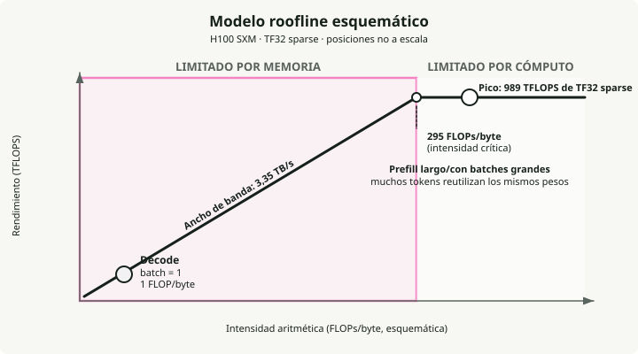
Las dos fases de la inferencia de LLM están a lados opuestos de este umbral:
- Decode es memory-bound. Generar tokens uno a uno implica cargar desde memoria toda la matriz de pesos de varios GB para multiplicarla contra un único token nuevo. En precisión de 16 bits (2 bytes por parámetro), eso son exactamente 1 FLOP/byte, casi 300x por debajo del umbral de la H100. Las unidades de cómputo están inactivas más del 99% del tiempo esperando a la memoria.
- Prefill es compute-bound. Procesar el prompt de entrada carga los pesos una vez pero los multiplica contra cientos o miles de tokens al mismo tiempo. La intensidad sube muy por encima de 295 y satura las unidades de cómputo.
Así que, para acelerar decode, trabaja en el ancho de banda de memoria: reduce el tamaño de los pesos con quantization, reduce la sobrecarga de memoria KV con GQA y PagedAttention, y aumenta la intensidad con batching. Para acelerar prefill, trabaja en el cómputo bruto: GPUs más rápidas, cómputo FP8.
2. Jerarquía de memoria de la GPU
Una GPU tiene cuatro capas de memoria, organizadas como una pirámide: una memoria principal grande pero lenta (HBM) en la base, y registros diminutos pero muy rápidos en la cima. Mover datos arriba y abajo de esta pirámide es el principal atasco. El cuello de botella más duro está entre HBM y SRAM, donde SRAM es aproximadamente 10x más rápida.
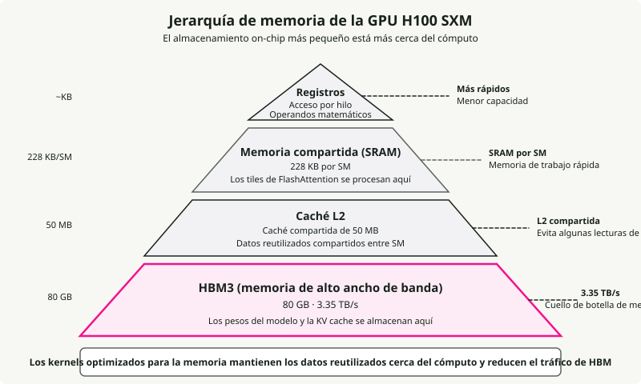
De más rápida a más lenta en una H100:
- Registers — la memoria más rápida, conectada directamente a los hilos de procesamiento. Aquí es donde realmente se ejecutan las operaciones; los datos tienen que cargarse aquí para que los Tensor Cores puedan usarlos.
- SRAM (Shared Memory) — la memoria de trabajo, en torno a 33 TB/s.
- L2 Cache — una capa intermedia (50 MB) en torno a 12 TB/s. Actúa como buffer para que, cuando varios SM necesiten los mismos pesos, no tengan todos que ir a HBM.
- HBM3 — la memoria principal de 80 GB que almacena los pesos del modelo y la KV cache, a ~3.35 TB/s.
La mayoría de los trucos de software de esta guía (FlashAttention, kernel fusion, PagedAttention) existen para mantener los datos en SRAM el máximo tiempo posible y evitar el viaje de vuelta a HBM, 10x más lento.
3. Glosario de hardware GPU
Los términos siguientes aparecen en toda la guía.
HBM (High Bandwidth Memory) — Dies de DRAM apilados conectados mediante through-silicon vias (TSVs), montados en el mismo paquete junto al die de la GPU. Generaciones: HBM2e (A100, 2 TB/s), HBM3 (H100, 3.35 TB/s), HBM3e (H200/B200, 4.8–8 TB/s). Por qué importa para los LLM: decode está limitado por ancho de banda de memoria, así que el ancho de banda de HBM determina directamente TPOT.
GDDR (Graphics DDR) — Memoria gráfica tradicional (GDDR6, GDDR6X) usada en GPUs de consumo (RTX 4090, L40S). Menor ancho de banda que HBM, pero más barata por GB. La GDDR6X de RTX 4090 ofrece ~1 TB/s frente a los 3.35 TB/s de la HBM3 de H100.
SM (Streaming Multiprocessor) — El bloque básico de cómputo de las GPUs NVIDIA. Cada SM contiene CUDA cores, Tensor Cores, memoria compartida (SRAM) y un warp scheduler. H100 has 132 SMs; A100 tiene 108.
Tensor Cores — Unidades especializadas de multiply-accumulate matricial dentro de cada SM. Aceleran matmuls en precisión mixta (FP16, BF16, FP8, INT8) que dominan el cómputo de los transformers. Los Tensor Cores de H100 ofrecen 989 TFLOPS in TF32 frente a ~67 TFLOPS de los CUDA cores por sí solos.
CUDA Cores — Unidades de propósito general para floating-point e integer. Manejan operaciones elemento a elemento, funciones de activación y trabajo no basado en matmul. Los Tensor Cores hacen el trabajo pesado en los LLM; los CUDA cores se encargan del resto.
Warp — Un grupo de 32 hilos que se ejecutan en lockstep sobre un SM. La unidad mínima de planificación en las GPUs NVIDIA. Warp specialization asigna distintos warps a distintas tareas (carga de datos vs. cómputo) para pipelining.
NVLink — Interconexión GPU-a-GPU de alta velocidad dentro de un nodo. NVLink 4.0 (H100) ofrece 900 GB/s bidireccionales; NVLink 5.0 (B200) alcanza 1.8 TB/s. Esencial para tensor parallelism, donde las GPUs tienen que intercambiar activaciones en cada capa.
InfiniBand — Tejido de red de alta velocidad para comunicación GPU entre nodos. NVIDIA ConnectX-7 ofrece 400 Gb/s por puerto. Se usa para pipeline parallelism y entrenamiento distribuido entre nodos.
RDMA (Remote Direct Memory Access) — Permite que una GPU lea/escriba la memoria de otra máquina sin involucrar a la CPU, minimizando la latencia. GPUDirect RDMA habilita transferencias GPU-a-GPU directas entre nodos. Se usa en serving desagregado para transferencias de KV cache.
NVMe (Non-Volatile Memory Express) — Interfaz SSD de alta velocidad usada para offloading de KV cache y offloading de parámetros con ZeRO-Infinity cuando la memoria de GPU/CPU no es suficiente. Velocidades de lectura secuencial de 5–7 GB/s por unidad (PCIe Gen 4), y las Gen 5 más recientes alcanzan 10–14 GB/s.
TFLOPS / PFLOPS — Tera/Peta floating-point operations per second. 1 TFLOPS = 10¹² FLOPS. Unidad estándar para medir throughput de cómputo de GPU. H100 ofrece 989 TFLOPS (TF32); FlashAttention-3 alcanza ~1.2 PFLOPS en FP8.
Parte II — Fundamentos de inferencia
La inferencia es la parte del sistema que realmente perciben los usuarios. La latencia, la KV cache, el modelo de ejecución en dos fases, la atención y la cuantización determinan entre todos qué velocidad, qué coste y qué fiabilidad puedes ofrecer.
4. Latencia: TTFT, TPOT y percentiles
Time to First Token (TTFT) es el retraso entre el envío de la petición y el primer token de salida. Lo determina la fase de prefill: el modelo tiene que procesar todo el prompt antes de generar nada, así que los prompts más largos implican mayor TTFT. Los objetivos en producción van desde <100 ms para code completion hasta <500 ms para chatbots. MLPerf Inference v5.0 fija P99 TTFT en \(\\leq\) 450 ms para Llama 2 70B.
Time Per Output Token (TPOT) es el intervalo medio entre tokens consecutivos después del primero. Corresponde a la fase de decode, donde cada paso está limitado por el ancho de banda de memoria:
La velocidad media de lectura silenciosa en humanos es de aproximadamente 250 ms por palabra (~5 tokens/s) (Brysbaert, 2019), pero los sistemas apuntan a ritmos mucho más altos para que el usuario no tenga que esperar a que aparezca el texto. El umbral para que el streaming se sienta fluido es aproximadamente 25 ms por token (~40 tokens/s). MLPerf fija P99 TPOT en \(\\leq\) 40 ms para cargas interactivas.
La latencia P50 vs P99 importa porque la mediana oculta la peor experiencia. P99 es el 1% más lento de las peticiones, que es donde viven las quejas de usuarios y las violaciones de SLA. Un sistema con buen P50 y mal P99 tiene un problema de batching, preemption o profundidad de cola.
5. Throughput: tokens por segundo y el tradeoff con la latencia
El throughput se mide en tokens de salida por segundo agregados sobre todas las peticiones concurrentes. Requests per second es una métrica más débil porque una respuesta de 10 tokens y otra de 1.000 tienen costes muy distintos. Cifras típicas: Llama 3.1 8B en una sola H100 alcanza 5.000–11.000 output tokens/s con batch sizes altos (vLLM Benchmarks, 2024); Llama 3 70B FP8 en 4×H100 queda en órdenes de magnitud similares en vLLM, SGLang y TensorRT-LLM.
El tradeoff: con poca concurrencia, cada petición obtiene muy buena latencia pero la GPU está infrautilizada. Al aumentar batch size, el throughput sube casi linealmente hasta que el cómputo se satura, y a partir de ahí la latencia crece con fuerza. Goodput, la fracción de peticiones que cumplen tus objetivos de SLO, es la métrica que conecta el throughput bruto con la satisfacción real del usuario.
6. KV Cache: el cuello de botella detrás de la mayoría de los demás cuellos de botella
Durante la generación autorregresiva, cada token nuevo atiende a todos los anteriores. La KV cache almacena las proyecciones Key y Value de cada token en cada capa para evitar recomputación \(O(n^2)\). Sin ella, generar el token \(n\) obligaría a volver a ejecutar el modelo sobre todos los \(n-1\) tokens anteriores.
La KV cache suele ser la presión dominante de memoria porque crece linealmente con la longitud de secuencia, el batch size y el número de capas:
donde:
- \(L\) = número de capas
- \(h_{kv}\) = número de cabezas KV
- \(d_h\) = dimensión de cabeza
- \(s\) = longitud de secuencia
- \(B\) = batch size
Ejemplos concretos con FP16 y batch size 1: Llama 3 8B a 8.192 tokens usa ~1.0 GB de KV cache; a 128K tokens, 16 GB. Llama 3 70B a 128K tokens necesita ~40 GB para una sola secuencia, la mitad de la VRAM de una H100. Con batch sizes de producción, la KV cache supera con facilidad la memoria de los pesos del modelo. Las implementaciones ingenuas desperdician 60–80% de la memoria KV asignada por fragmentación, que es justo el problema que PagedAttention se diseñó para resolver.
Las optimizaciones principales son GQA (menos cabezas KV), cuantización de KV cache (FP8/INT8), PagedAttention (asignación por bloques con <4% de desperdicio) y offloading de KV cache a CPU o NVMe.
7. Prefill vs Decode: dos fases, dos cuellos de botella
La fase de prefill procesa todo el prompt de entrada en paralelo y rellena la KV cache. Está compute-bound: las grandes multiplicaciones de matrices saturan por completo los Tensor Cores, y esto es lo que determina TTFT. La fase de decode genera un token cada vez, y en cada paso lee todos los pesos del modelo y la KV cache desde HBM para producir un único token. Está memory-bandwidth-bound: las unidades de cómputo pasan casi todo el tiempo inactivas esperando datos, y esto determina TPOT.
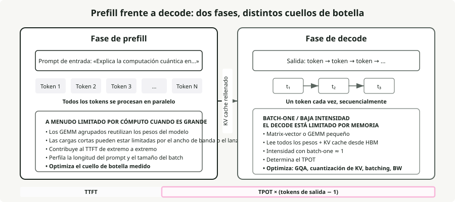
Chunked prefill divide el prompt en bloques de tamaño fijo (por ejemplo, 512 tokens) en vez de procesarlo de una vez. Un prefill largo deja de bloquear las peticiones decode en curso, el trabajo compute-bound y memory-bound se co-planifica en la misma GPU, y benchmarks de vLLM muestran +50% de throughput (Agrawal et al., 2024). El coste es un TTFT ligeramente mayor para la nueva petición.
Un patrón más reciente llamado disaggregated serving (introducido por Splitwise y DistServe, y ahora usado por Perplexity y NVIDIA Dynamo) separa físicamente prefill y decode en pools distintos de GPU, cada uno optimizado para su cuello de botella. Las transferencias de KV cache entre pools se hacen mediante RDMA.
8. GQA y MQA: reducir la KV cache
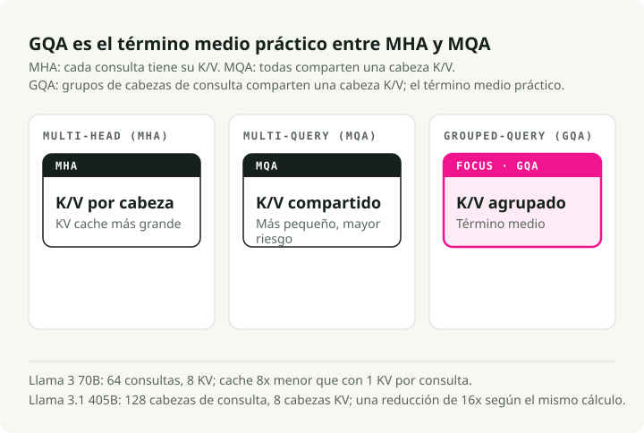
La Multi-Head Attention (MHA) estándar asigna a cada query head su propia cabeza K y V. Multi-Query Attention (MQA) comparte una sola cabeza KV entre todas las query heads, lo que supone una reducción extrema. Grouped-Query Attention (GQA) es el punto intermedio práctico: grupos de query heads comparten una cabeza KV.
Llama 3 70B usa 64 query heads pero solo 8 cabezas KV, una reducción 8x de KV cache frente a MHA. Llama 3.1 405B lleva esto a 128 query heads con 8 cabezas KV, para una reducción 16x (Meta, 2024). GQA mantiene una calidad de nivel MHA (a ~1% en benchmarks) mientras se acerca a la velocidad de MQA (Ainslie et al., 2023). Una KV cache más pequeña implica batches más grandes, más throughput y menor latencia por token en decode.
9. Quantization: cambiar bits por velocidad y memoria
La cuantización reduce la precisión de los pesos del modelo y/o de las activaciones. Los tradeoffs principales:
| Formato | Bits | Memoria (modelo 7B) | Impacto en calidad |
|---|---|---|---|
| FP16/BF16 | 16 | ~14 GB | Línea base |
| FP8 | 8 | ~7 GB | Prácticamente sin pérdida en Hopper (H100) |
| INT8 | 8 | ~7 GB | 1-3% de degradación con ajuste |
| INT4 | 4 | ~3.5 GB | Estable para 70B+, arriesgado en modelos pequeños |
AWQ (Activation-Aware Weight Quantization) localiza el <1% de pesos relevantes observando las magnitudes de activación y aplica escalado por canal para protegerlos. Solo necesita 128–1.024 tokens de calibración y ganó el premio al mejor artículo de MLSys 2024. GPTQ usa información hessiana de segundo orden para cuantización por capas, lo que funciona mejor en benchmarks de código, pero necesita más datos de calibración. bitsandbytes (la librería de Tim Dettmers) cuantiza al vuelo durante la carga del modelo sin coste de preprocesado; su formato NF4 impulsa el fine-tuning con QLoRA. FP8 en H100/H200 se está convirtiendo en el valor por defecto en producción: casi sin pérdida y con una reducción 2x de memoria.
Algo importante: el kernel suele importar más que el algoritmo de cuantización. Los mismos pesos cuantizados servidos con kernels distintos pueden mostrar una diferencia de throughput de 2.6x únicamente por cómo usan la GPU (Sección 10).
Parte III — Optimizaciones de inferencia
Esta parte trata sobre las técnicas de software que convierten un sistema de inferencia funcional en uno rápido. Cada una ataca un cuello de botella concreto: FlashAttention explota la brecha SRAM-HBM, PagedAttention elimina la fragmentación de la KV cache, continuous batching mantiene ocupada la GPU.
10. CUDA kernels y kernel fusion
Un CUDA kernel es una función escrita para la GPU que se ejecuta en paralelo sobre miles de hilos. Cuando la CPU invoca un kernel, la GPU distribuye el trabajo entre sus SMs: cada SM ejecuta varios warps de 32 hilos, y cada hilo procesa una parte de los datos. Toda operación en la inferencia de LLM, desde matrix multiplication hasta token sampling, acaba siendo un lanzamiento de kernel. Un único forward pass a través de un modelo 70B dispara de cientos a miles de lanzamientos de kernel, y la diferencia entre un kernel ingenuo y uno optimizado puede decidir si tu sistema cumple su latencia SLO.
Las principales categorías de kernels en serving de LLM:
- GEMM kernels para matrix multiplication, que dominan tanto el cómputo de prefill como el de decode.
- Attention kernels como FlashAttention, que trocean los cálculos para mantenerse en SRAM en vez de derramar a HBM.
- Fused kernels que combinan varias operaciones (como add + layer norm o proyección QKV) en un único lanzamiento para evitar los viajes intermedios a HBM.
- Sampling kernels que convierten logits en token IDs mediante top-k, top-p o temperature sampling.
La calidad del kernel suele importar más que el algoritmo de cuantización. Los mismos pesos cuantizados INT4 servidos mediante Marlin (un kernel optimizado FP16xINT4) alcanzan 712 tokens/s frente a los 276 tokens/s del GPTQ estándar, una diferencia de throughput de 2.6x debida solo a una mejor utilización de la GPU. Marlin lo consigue mediante carga de memoria asíncrona y colas en memoria compartida que mantienen alimentados los Tensor Cores en vez de esperar a HBM. Triton reduce la barrera para escribir kernels personalizados al exponer la programación de GPU a través de Python en vez de CUDA C++ puro, lo que hace accesible la optimización a nivel de kernel a ingenieros de ML y no solo a especialistas en GPU. La mayoría de las optimizaciones posteriores de esta parte (FlashAttention, fused kernels, PagedAttention) son, en el fondo, mejores kernels o formas más inteligentes de orquestar lanzamientos de kernel.
Kernel fusion combina varias operaciones secuenciales en un único kernel de GPU y evita las escrituras intermedias a HBM. Fusiones comunes: proyección QKV (un matmul en vez de tres), attention + softmax (FlashAttention en sí), add + RMSNorm (FlashNorm) y activación SwiGLU (DeepFusionKernel). Triton hace viable escribir estos fused kernels en Python. Sin fusión, un modelo 70B tiene miles de lanzamientos de kernel por token con ~30% de utilización de GPU. Con fusión, las capas se reducen a 1–2 kernels optimizados con 80–90% de utilización.
11. FlashAttention: trocear la atención para vivir en SRAM
La atención estándar materializa la matriz completa de atención \(N \\times N\) en HBM, lo que cuesta memoria \(O(N^2)\) y produce mucho tráfico de memoria. La idea detrás de FlashAttention es no materializar nunca esa matriz. Divide las matrices Q, K, V en bloques que caben en SRAM, calcula atención parcial dentro de cada bloque y fusiona los resultados usando un online softmax (siguiendo incrementalmente el máximo y la suma acumulados entre bloques). La memoria baja de \(O(N^2)\) a \(O(N)\), y las lecturas desde HBM se reducen en un orden de magnitud.
Cada versión apunta al cuello de botella de su generación de GPU:
- FlashAttention v1 (A100, 2022) demostró que la idea de tiling más online-softmax funciona. Un speedup de 2–4x frente a la atención estándar, pero solo con 25–40% de utilización de GPU porque la planificación del kernel dejaba muchos SM inactivos.
- FlashAttention v2 (A100, 2023) rehízo el paralelismo para dividir por dimensión de secuencia en vez de batch y heads. Alcanzó 50–73% de utilización en A100, aproximadamente 2x más rápido que v1.
- FlashAttention v3 (H100 Hopper, 2024) añadió warp specialization (warps separados para movimiento de datos vs. matemáticas) y pipelining GEMM-softmax para solapar cargas de memoria con cómputo. 75–85% de utilización en H100 y hasta ~1.2 PFLOPS en FP8. Spotlight en NeurIPS 2024.
- FlashAttention v4 (B200 Blackwell, 2026) aborda un nuevo cuello de botella: en Blackwell, el throughput de tensor core escala tan rápido que las operaciones no-matmul (exponenciales de softmax, reescalado) pasan a ser el limitante. FA4 emula por software la exponencial con aproximaciones polinómicas en unidades FMA, usa reescalado condicional para reducir sobrecarga y almacena intermedios en la memoria tensorial dedicada de Blackwell (TMEM) en vez de en registros. El resultado: 1.605 TFLOPS/s en B200 en BF16, 1.3x más rápido que cuDNN 9.13 y 2.7x más rápido que Triton.
Cada generación chocó con un muro distinto de hardware, y cada versión de FlashAttention se rediseñó desde el kernel para resolverlo.
12. FlashDecoding: paralelizar el cuello de botella de decode
FlashAttention estándar mantiene ocupada la GPU repartiendo el trabajo entre batch size y query length. Durante decode, el modelo genera exactamente 1 token por vez (query length = 1). Si el batch size multiplicado por el número de attention heads es menor que el número total de SM de la GPU (108 en una A100), la mayor parte de la GPU queda inactiva mientras unas pocas unidades recorren secuencialmente el historial de tokens.
FlashDecoding resuelve esto añadiendo una nueva dimensión de paralelización: la propia longitud de secuencia KV. Divide la KV cache en fragmentos más pequeños y los distribuye entre todos los procesadores GPU que, de otro modo, estarían inactivos, para evaluarlos en paralelo; luego fusiona los cálculos parciales con una reducción log-sum-exp.
El resultado es hasta un speedup end-to-end de 8x en decode sobre secuencias largas (contexto 64K) y un tiempo por token aproximadamente constante. Generar el token 60.000 sigue siendo casi tan rápido como generar el token 100.
13. Continuous batching vs static batching
Static batching espera a que todas las secuencias de un batch terminen antes de empezar el siguiente, así que las secuencias cortas desperdician ciclos de GPU quedándose inactivas después de llegar a end-of-sequence. Continuous batching (introducido por el artículo Orca, OSDI 2022) opera a granularidad de iteración: en cada paso de decode, las secuencias completadas se eliminan y se insertan nuevas.
Las cifras son grandes. Los benchmarks de Anyscale sobre OPT-13B muestran static batching optimizado con 4x sobre el ingenuo, continuous batching con 8x, y vLLM con continuous batching + PagedAttention con 23x sobre el ingenuo (Anyscale, 2023). El problema es que continuous batching amplifica la fragmentación de la KV cache. Más secuencias concurrentes significan más asignaciones de memoria dispersas, que es exactamente el problema que PagedAttention se diseñó para resolver.
14. PagedAttention: memoria virtual para la KV cache
La PagedAttention de vLLM aplica la idea de memoria virtual de los sistemas operativos a la gestión de la KV cache. La KV cache se divide en bloques de tamaño fijo (normalmente 16 tokens), los bloques se asignan bajo demanda a medida que se generan tokens, y las posiciones lógicas (secuenciales) se mapean a ubicaciones físicas (dispersas) de memoria mediante block tables. Varias peticiones que comparten prefijo (system prompts, beam search) pueden apuntar a los mismos bloques físicos.
Los sistemas anteriores desperdiciaban 60–80% de la memoria de KV cache por fragmentación y preasignación. PagedAttention lo reduce a <4%, lo que permite que el throughput suba 2–4x a la misma latencia y hasta 24x frente a HuggingFace Transformers (vLLM Blog, 2023).
15. Speculative decoding: varios tokens por forward pass
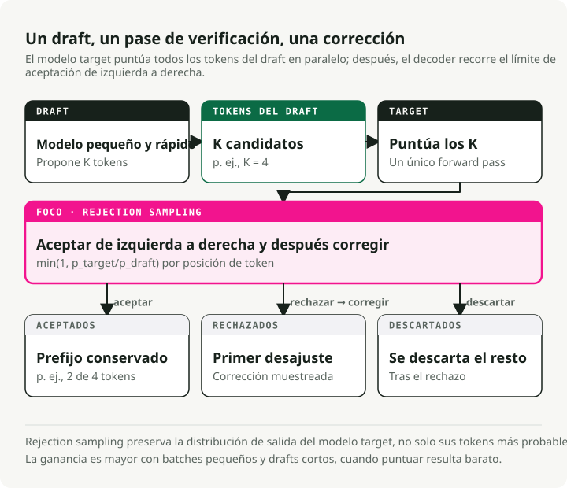
Un pequeño draft model genera \(K\) tokens candidatos, y después el target model grande verifica esos \(K\) tokens en un único forward pass. Los tokens correctos se aceptan; el primero incorrecto se rechaza. La calidad de salida es matemáticamente idéntica a la del target model por sí solo, así que esto es una aceleración sin pérdida.
Funciona porque decode en LLM está limitado por el ancho de banda de memoria: verificar \(K\) tokens cuesta aproximadamente lo mismo que generar 1, porque en ambos casos se cargan todos los pesos del modelo una vez. Los speedups típicos quedan entre 1.5x y 3x, con métodos como EAGLE-3 que alcanzan hasta 6.5x. Entre las variantes están Medusa (cabezas de predicción adicionales, sin modelo aparte), prompt lookup decoding (matching de n-grams contra la entrada, gratis) y EAGLE (extrapolación a nivel de features).
La contrapartida es la concurrencia: con batch sizes altos, el cómputo extra de draft y verificación puede provocar una ralentización de 1.4–1.8x. Speculative decoding ayuda sobre todo con batch sizes bajos y en tareas donde la tasa de aceptación del draft es alta (summarization, QA).
16. Prefix caching y reutilización de KV cache
En lugar de desechar la KV cache cuando termina una petición, prefix caching la conserva para reutilizarla en nuevas peticiones que comparten los mismos tokens de prefijo. Eso recorta prefill redundante para system prompts, ejemplos few-shot, contexto de RAG e historial de conversación multi-turno.
Automatic Prefix Caching de vLLM aplica hash a cada bloque KV y usa una tabla hash global para búsquedas, con tasas de acierto de 87%+ en prompts bien estructurados. RadixAttention de SGLang mantiene un radix tree de todos los tensores KV cacheados con granularidad a nivel de token y detección automática de oportunidades de caché, llegando hasta 5x de mejora de throughput.
17. Streaming en la práctica
Streaming envía tokens al cliente a medida que se generan en vez de esperar a la respuesta completa. La mayoría de frameworks de serving lo exponen mediante Server-Sent Events: el cliente abre una conexión HTTP persistente y el servidor empuja cada token (o un pequeño lote de tokens) como un evento data:. TTFT determina cuándo ve el usuario la primera salida; TPOT determina lo fluido que se percibe. Objetivo: TPOT < 25 ms para streaming fluido (~40 tokens/s).
En el lado del cliente, streaming obliga a tomar decisiones de buffering. Renderizar token a token puede provocar jitter visual, especialmente con markdown o bloques de código que necesitan contexto de varios tokens para formatearse bien. Patrones comunes: buffering a nivel de palabra (acumular tokens hasta un límite de espacio en blanco), buffering a nivel de línea (esperar a un salto de línea antes de renderizar) y buffering adaptativo (renderizar inmediatamente para prosa, hacer buffering para bloques de código). El parámetro stream_options: {"include_usage": true} en APIs compatibles con OpenAI devuelve los conteos de tokens en el evento SSE final, lo que hace posible un seguimiento preciso del coste en respuestas en streaming.
Chunked prefill es lo que permite que el streaming se mantenga bajo carga. Sin él, un único prefill largo puede bloquear la entrega de tokens para cualquier otro usuario concurrente.
Parte IV — Arquitectura del modelo
Cómo se construyen los LLM: el bloque transformer, la tokenización, la gestión del contexto y las variantes arquitectónicas que se convirtieron en el estándar. Esto sustenta tanto la inferencia como el entrenamiento.
18. Elementos esenciales de la arquitectura transformer
Un transformer moderno decoder-only (GPT, Llama) es una pila de capas idénticas, cada una con dos subbloques: attention y feed-forward. Cada subbloque está envuelto con una residual connection y normalización. Componentes clave:
Multi-Head Attention — el mecanismo que permite que cada token mire a cualquier otro token para decidir qué es relevante. La entrada se proyecta en tres matrices: Queries (¿qué busco?), Keys (¿qué contengo?) y Values (¿qué información transporto?). Las puntuaciones de atención se calculan como:
El producto escalar \(QK^T\) mide la similitud entre cada par de tokens. Dividir por \(\\sqrt{d_k}\) evita que los productos escalares crezcan demasiado (lo que empujaría a softmax a regiones con gradientes que se desvanecen). Softmax convierte las puntuaciones en probabilidades, y la multiplicación por \(V\) produce una combinación ponderada de vectores value. Ejecutarlo en varias heads en paralelo permite que el modelo atienda a relaciones distintas al mismo tiempo (una head para sintaxis, otra para coreference, etc.).
Feed-Forward Network (FFN) — una vez que la atención ha decidido qué tokens son relevantes, la FFN decide qué hacer con esa información. Los LLM modernos usan SwiGLU en lugar de la FFN ReLU original de dos matrices:
SwiGLU usa tres matrices de pesos en vez de dos y una activación Swish suave en vez de ReLU. Eso añade alrededor de un 50% más de parámetros a la FFN, pero mejora lo suficiente la calidad como para que todas las grandes familias de modelos (Llama, Mistral, Qwen, Gemma) la hayan adoptado. La FFN suele representar aproximadamente dos tercios del total de parámetros del modelo.
Residual Connections — cada subbloque suma su salida a su entrada: \(\\text{Output} = \\text{Input} + \\text{Sublayer}(\\text{Input})\). Sin esta skip connection, los gradientes se desvanecen al hacer backpropagation a través de 80–128 capas. La residual crea una ruta que permite que la información y los gradientes fluyan directamente desde capas tempranas hasta capas tardías.
RMSNorm — ha reemplazado a LayerNorm en prácticamente todos los LLM modernos. LayerNorm normaliza recentrando (restando la media) y reescalando (dividiendo por la desviación estándar). RMSNorm omite la resta de la media y solo reescala, lo que reduce a la mitad los parámetros aprendidos y es 7–64% más rápido sin pérdida de calidad. La colocación pre-norm (normalizar antes de attention/FFN en vez de después) es ya el estándar porque da gradientes más estables sin necesidad de warmup cuidadoso de learning rate.
Estimación del número de parámetros para un modelo decoder-only:
donde \(V\) = tamaño del vocabulario, \(d\) = dimensión oculta, \(L\) = número de capas. El término \(V \\times d\) es la matriz de embeddings; el término \(12 \\times d^2\) por capa cubre las proyecciones de atención (Q, K, V, output = \(4d^2\)) y la FFN SwiGLU (\(8d^2\) con el tamaño intermedio típico de \(\\frac{8}{3}d\)). Para Llama 3 8B (\(V\)=128.256, \(d\)=4.096, \(L\)=32): \(128{,}256 \\times 4{,}096 + 12 \\times 32 \\times 4{,}096^2 \\approx 7.0B + 0.5B \\approx 7.5B\) parámetros (real: 8.03B con embeddings compartidos y ajustes GQA).
19. Por qué dominan las arquitecturas decoder-only
El Transformer original (2017) tenía tanto encoder como decoder. Desde entonces, el campo se dividió en tres familias arquitectónicas, y una se convirtió en el valor por defecto para la IA generativa.
Los modelos encoder-only (BERT, RoBERTa) usan atención bidireccional: cada token atiende a todos los demás tokens en ambas direcciones. Eso produce representaciones ricas para tareas de comprensión (classification, NER, semantic similarity), pero no puede generar texto de forma autorregresiva. Los modelos encoder-only siguen dominando como backbone de embedding models, rerankers y clasificadores ligeros (por ejemplo, los routers basados en BERT de RouteLLM).
Los modelos encoder-decoder (T5, BART, el Transformer original) separan comprensión y generación. El encoder procesa la entrada completa con atención bidireccional, y después el decoder genera la salida de forma autorregresiva mientras atiende a las representaciones del encoder mediante cross-attention. Esto tenía una ventaja natural en tareas sequence-to-sequence como traducción, donde entrada y salida son secuencias fundamentalmente distintas. El T5 de Google mostró que cualquier tarea de NLP podía formularse como text-to-text, y los modelos encoder-decoder siguen impulsando algunos sistemas especializados (Whisper para reconocimiento de voz, FLAN-T5 para instruction following).
Los modelos decoder-only (GPT, Llama, Mistral, Gemini) usan atención causal (unidireccional): cada token atiende solo a tokens anteriores. Lo plantean todo como next-token prediction: la "entrada" es el comienzo de la secuencia, y la "salida" es su continuación. Cuatro razones por las que esta arquitectura se impuso:
-
Eficiencia de KV cache. La KV cache de tokens anteriores sigue siendo válida a medida que se generan nuevos tokens, así que nunca hace falta descartarla ni recomputarla. Los modelos encoder-decoder tienen que mantener dos cachés de atención distintas (self-attention más cross-attention sobre la salida del encoder), lo que añade sobrecarga de memoria y complejidad arquitectónica.
-
Simplicidad de entrenamiento. El objetivo de entrenamiento es simple next-token prediction sobre texto en bruto. No hacen falta datos emparejados entrada-salida (como en traducción) ni reconstrucción de tokens enmascarados (como en BERT). Puedes entrenar sobre prácticamente cualquier texto de internet, libros y código sin preprocesado especial, lo que supone una gran ventaja cuando escalas a billones de tokens.
-
Simplicidad arquitectónica. Un solo módulo se encarga de todo: el mismo bloque transformer, repetido \(L\) veces. No hay capas encoder-decoder de cross-attention ni una pila de encoder separada. Eso hace más directas las estrategias de paralelismo (Sección 33) y reduce la superficie de ingeniería para optimización. FlashAttention, quantization y speculative decoding solo tienen que apuntar a un único patrón de atención.
-
In-context learning. Los modelos decoder-only son naturalmente buenos en few-shot learning porque ejemplos, instrucciones y consulta son simplemente tokens en la misma secuencia. El modelo no distingue entre "entrada" y "salida"; predice el siguiente token dado todo lo anterior. GPT-3 fue el primero en demostrar esto a escala, y eso convirtió a los modelos decoder-only en una opción muy fuerte para el rol de asistente generalista.
20. Mixture of Experts
MoE reemplaza la FFN densa en cada capa transformer por varias expert FFNs más pequeñas y un gating router ligero. El router calcula una puntuación para cada experto (normalmente un softmax sobre proyecciones lineales aprendidas) y selecciona los top-\(k\) expertos por token. Solo los expertos activados computan, así que un modelo puede tener una capacidad total enorme manteniendo bajo el coste por token. Esto es cómputo condicional disperso: los parámetros totales definen lo que el modelo puede representar; los parámetros activos definen lo que cuesta ejecutarlo.
| Modelo | Parámetros totales | Parámetros activos | Expertos (routed + shared) | Top-\(k\) |
|---|---|---|---|---|
| Mixtral 8x7B | 47B | ~13B | 8 + 0 | 2 |
| DeepSeek-V3 | 671B | 37B | 256 + 1 | 8 |
El shared expert en DeepSeek-V3 se activa siempre para cada token. Proporciona una representación base sobre la que los expertos routed pueden especializarse.
Entrenar MoE tiene sus propios puntos de dolor. Load balancing: los tokens se concentran en unos pocos expertos populares y el resto queda infraentrenado. Expert collapse: los expertos convergen a representaciones idénticas, anulando el sentido de tener varios expertos. Y la sobrecarga de comunicación del Expert Parallelism. Los modelos MoE tradicionales añaden una pérdida auxiliar para penalizar el routing desequilibrado, pero esa pérdida compite con el objetivo principal de entrenamiento y degrada la calidad. DeepSeek-V3 resolvió esto con términos de sesgo auxiliary-loss-free: cada experto tiene un sesgo añadido a su puntuación de gating, ajustado dinámicamente fuera de backpropagation, reduciéndolo para expertos sobrecargados y aumentándolo para infrautilizados. El resultado es routing equilibrado sin tradeoff de calidad.
21. Tokenización: BPE, SentencePiece y tiktoken
Los LLM no ven texto. Ven secuencias de IDs enteros de token. Un tokenizer divide el texto bruto en tokens (subword pieces) y asigna un ID a cada uno. La elección del tokenizer afecta a la calidad del modelo, la velocidad de inferencia y la equidad multilingüe.
Byte Pair Encoding (BPE) es el algoritmo más común. Fusiona iterativamente los pares adyacentes más frecuentes del corpus de entrenamiento. Un ejemplo simplificado:
- Empezar con vocabulario a nivel de carácter:
[l, o, w, e, r, _] - El par más frecuente es
(l, o)→ fusionar enlo→ vocabulario:[l, o, w, e, r, _, lo] - El siguiente par más frecuente es
(lo, w)→ fusionar enlow→ el vocabulario añadelow - Continuar hasta que el vocabulario alcance el tamaño objetivo (p. ej., 128K tokens)
Palabras comunes como "the" se convierten en un solo token, mientras que palabras raras como "defenestration" se dividen en subword pieces como ["def", "en", "est", "ration"]. El intercambio es tamaño de vocabulario frente a longitud de secuencia.
Tres implementaciones de tokenizer cubren la mayor parte del uso en producción:
- SentencePiece trata la entrada como un flujo bruto de bytes sin preprocesado específico del idioma (sin pretokenización por espacios o puntuación), lo que la hace agnóstica al idioma e importa mucho en scripts no latinos. Soporta tanto BPE como unigram. La usan Llama 1/2, T5 y Mistral.
- tiktoken es el tokenizer de OpenAI, escrito en Rust y basado en byte-level BPE. Su núcleo compilado en Rust es 3–6x más rápido que las alternativas basadas en Python. Llama 3 pasó de SentencePiece al algoritmo de tiktoken.
- HuggingFace Tokenizers es la librería basada en Rust que soporta BPE, WordPiece y Unigram. Es el estándar de facto para distribución de modelos open source.
Los tamaños de vocabulario han crecido de forma constante, con implicaciones importantes para la eficiencia:
| Modelo | Tamaño de vocabulario | Fertility en inglés | Por qué importa |
|---|---|---|---|
| GPT-2 | 50,257 | ~1.3 tokens/palabra | Línea base BPE original |
| Llama 2 | 32,000 | ~1.4 tokens/palabra | Vocabulario más pequeño, secuencias más largas |
| GPT-4 | 100,256 | ~1.1 tokens/palabra | Mejor compresión, menos tokens por petición |
| Llama 3 | 128,256 | ~1.0 tokens/palabra | 4x más grande que Llama 2, gran mejora multilingüe |
| GPT-4o | 200,000 | ~1.0 tokens/palabra | El vocabulario de producción más grande |
Fertility (tokens por palabra) mide la eficiencia de compresión. Cuanto más bajo, mejor: menos tokens significa secuencias más cortas, menor coste y más contenido dentro de la ventana de contexto. El inglés suele quedar en ~1.0–1.3 tokens/palabra, pero los scripts no latinos (chino, japonés, coreano, árabe) pueden ser 2–4x más altos con vocabularios centrados en inglés. El mismo contenido cuesta 2–4x más tokens para usuarios no angloparlantes, lo que sigue siendo un problema de equidad que vocabularios mayores y más equilibrados solo resuelven parcialmente.
22. Ventanas de contexto y positional encodings
La ventana de contexto es el número máximo de tokens que un modelo puede procesar en un único forward pass. Ha crecido mucho:
| Modelo | Ventana de contexto | Año |
|---|---|---|
| Transformer original | 512 | 2017 |
| GPT-4 Turbo | 128K | 2023 |
| Claude 3.5 | 200K | 2024 |
| Gemini 1.5 Pro | 1M+ | 2024 |
| Grok 4 Fast | 2M | 2025 |
Aquí hay un problema básico: el mecanismo de atención trata la entrada como un conjunto, no como una secuencia. No tiene una noción incorporada del orden de las palabras. Sin información posicional, "the cat sat on the mat" y "the mat sat on the cat" producirían representaciones idénticas. Las positional encodings inyectan orden para que el modelo sepa dónde está cada token.
Dominan tres enfoques:
-
RoPE (Rotary Position Embeddings) codifica la posición de cada token rotando sus vectores query y key con un ángulo proporcional a la posición. Los tokens cercanos reciben rotaciones similares, así que su producto escalar (puntuación de atención) se mantiene alto. Los tokens lejanos reciben rotaciones muy distintas, lo que codifica la distancia relativa. RoPE es el estándar en casi todos los open LLM modernos (Llama, Mistral, Qwen) porque maneja bien las posiciones relativas y es computacionalmente barato.
-
ALiBi (Attention with Linear Biases) evita modificar embeddings y añade una penalización directamente a las puntuaciones de atención: cuanto más separados estén dos tokens, mayor será el sesgo negativo. Sin parámetros aprendidos, sin cómputo adicional. Permite cierta extrapolación más allá de la longitud de entrenamiento, pero se degrada visiblemente a 2x+ del contexto de entrenamiento.
-
YaRN (Yet another RoPE extensioN) es la mejor opción actual para estirar la ventana de contexto de un modelo más allá de lo que vio durante el entrenamiento. Agrupa las dimensiones de frecuencia de RoPE en tres categorías (alta frecuencia: no escalar; baja frecuencia: escalar linealmente; frecuencia media: interpolar) y aplica un escalado distinto a cada una. El resultado: extensión de contexto con 10x menos tokens de fine-tuning y 2.5x menos pasos de entrenamiento que la interpolación posicional ingenua.
Parte V — Entrenamiento y alineación
El entrenamiento es donde se construyen las capacidades. Esta parte cubre pretraining, fine-tuning eficiente (LoRA, precisión mixta), scaling laws y métodos de alineación.
23. Pretraining, fine-tuning y alineación
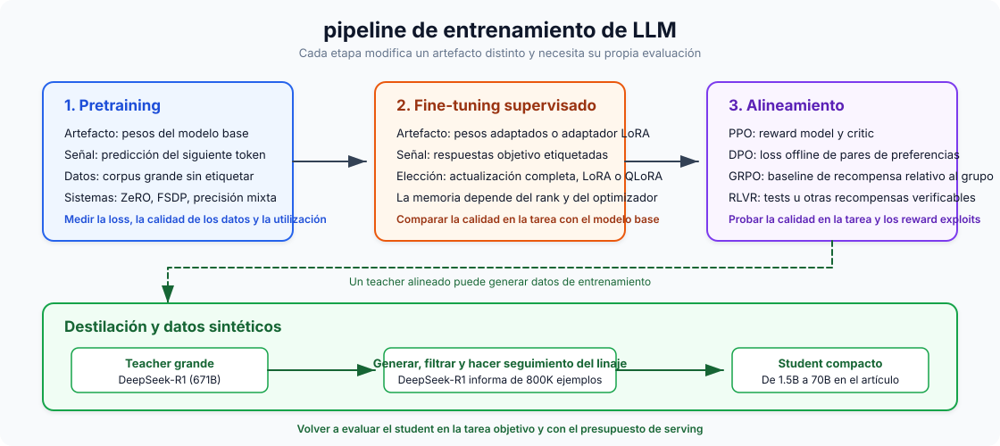
Pretraining es next-token prediction autosupervisado sobre billones de tokens. Construye comprensión general del lenguaje y cuesta \\(500K a \\\)100M+: Llama 3 405B usó \(3.8 \\times 10^{25}\) FLOPs. Supervised fine-tuning (SFT) adapta el modelo preentrenado a tareas concretas con datos etiquetados, por cientos o pocos miles de dólares en una sola GPU. RLHF / RLAIF enseña cualidades subjetivas como utilidad mediante preference learning: recopilar comparaciones humanas, entrenar un reward model y después hacer fine-tuning con RL (normalmente PPO o DPO). RLAIF sustituye a los anotadores humanos por feedback de IA (Constitutional AI).
El cómputo abarca aproximadamente seis órdenes de magnitud: pretraining en \(10^{24}\)–\(10^{26}\) FLOPs, SFT en \(10^{18}\)–\(10^{21}\), RLHF en una escala similar a SFT pero con 4 copias del modelo en memoria para PPO. Cubrí el marco completo de decisión para fine-tuning (cuándo hacer fine-tuning vs. usar RAG vs. prompt engineering) en LLM Fine-Tuning Guide.
24. LoRA y QLoRA: fine-tuning eficiente en parámetros
LoRA congela los pesos preentrenados e inyecta matrices entrenables de bajo rango \(A\) (\(r \\times k\)) y \(B\) (\(d \\times r\)) de modo que el peso actualizado es \(W_0 + BA\). La idea es que las actualizaciones de pesos durante fine-tuning tienen rango intrínseco bajo. Eso reduce los parámetros entrenables en 10.000x (GPT-3 175B pasa de 175B a ~18M) y la memoria GPU en ~3x. Rangos típicos: \(r\)=8–16 para tareas simples, \(r\)=64–128 para escenarios complejos. Los adapters LoRA pueden fusionarse tras el entrenamiento sin sobrecarga de inferencia.
QLoRA carga el modelo base en cuantización NF4 de 4 bits mientras entrena adapters LoRA en BF16. NormalFloat4 coloca más niveles de cuantización cerca de cero, donde la densidad de pesos es mayor. QLoRA hace fine-tuning de un modelo 65B en una sola GPU de 48GB con un rendimiento apenas distinguible del full fine-tuning a 16 bits. El tradeoff es un tiempo de entrenamiento 39% mayor a cambio de un ahorro de memoria GPU del 33% frente a LoRA estándar.
25. Entrenamiento en precisión mixta
Cada formato floating-point distribuye sus bits entre tres campos: signo (siempre 1 bit), exponente (fija el rango dinámico) y mantisa (fija la precisión). Más bits de exponente significan un rango más amplio de magnitudes representables; más bits de mantisa significan distinciones más finas entre valores cercanos. Los formatos enteros no tienen exponente y representan solo enteros uniformemente espaciados dentro de un rango fijo.
| Formato | Bits | Diseño (S / E / M) | Rango | Precisión | Mejor para |
|---|---|---|---|---|---|
| FP32 | 32 | 1 / 8 / 23 | \(\\pm 3.4 \\times 10^{38}\) | ~7 cifras decimales | Pesos maestros, estados del optimizador (momento y varianza de Adam) |
| BF16 | 16 | 1 / 8 / 7 | \(\\pm 3.4 \\times 10^{38}\) | ~2 cifras decimales | Formato preferido para entrenamiento — mismo rango que FP32, sin loss scaling |
| FP16 | 16 | 1 / 5 / 10 | \(\\pm 65{,}504\) | ~3 cifras decimales | Entrenamiento con loss scaling (GPUs antiguas); inferencia en hardware pre-Hopper |
| FP8 E4M3 | 8 | 1 / 4 / 3 | \(\\pm 448\) | ~1 cifra decimal | Forward pass en Hopper (H100) — más precisión para pesos y activaciones |
| FP8 E5M2 | 8 | 1 / 5 / 2 | \(\\pm 57{,}344\) | ~0.6 cifras decimales | Backward pass en Hopper — mayor rango para gradientes |
| INT8 | 8 | fixed-point | \(-128\) a \(127\) | Enteros exactos | Cuantización post-training de pesos para inferencia (W8A8); cuantización de KV cache |
| INT4 | 4 | fixed-point | \(-8\) a \(7\) | Enteros exactos | Cuantización agresiva solo de pesos (AWQ, GPTQ) para inferencia en hardware con poca memoria |
BF16 tiene el mismo rango que FP32 porque el rango lo fija el campo exponente, y BF16 conserva los 8 bits de exponente de FP32. Renuncia a bits de mantisa en su lugar (7 frente a 23), intercambiando precisión por una reducción 2x de memoria y evitando al mismo tiempo los problemas de overflow y underflow que afectan al entrenamiento en FP16. FP16 solo tiene 5 bits de exponente, lo que limita su rango a ~65K. Los gradientes superan eso con frecuencia, por eso el entrenamiento en FP16 necesita loss scaling: multiplicar la pérdida por una constante grande antes de backpropagation y dividir después los gradientes. BF16 hace innecesario el loss scaling.
Los formatos enteros no se usan en entrenamiento porque la cuantización entera no tiene rango dinámico y no puede representar la gran dispersión de magnitudes de gradiente durante backpropagation. Funcionan bien para inferencia, donde los pesos están congelados y pueden mapearse a un rango fijo. La cuantización INT4 (mediante AWQ o GPTQ) reduce un modelo 7B de ~14 GB a ~3.5 GB, suficiente para ejecutarlo en GPUs de consumo con solo una pérdida menor de calidad.
El entrenamiento FP8 en H100 mediante Transformer Engine usa E4M3 para el forward pass (más bits de mantisa, mejor precisión para activaciones) y E5M2 para el backward pass (más bits de exponente, mayor rango para gradientes), y ofrece hasta 75% menos tiempo wall-clock en modelos 175B. DeepSeek-V3 se entrenó íntegramente con precisión mixta FP8 por unos $5.6M, que es el coste marginal de cómputo de la ejecución final de entrenamiento, sin contar I+D e infraestructura.
26. Gradient checkpointing
Cada capa del forward pass produce una salida intermedia llamada activación:
Normalmente todas las activaciones tienen que permanecer en memoria porque backpropagation las necesita para calcular gradientes. En un transformer profundo, las activaciones almacenadas pueden ocupar más memoria que los propios pesos del modelo.
Gradient checkpointing intercambia cómputo por memoria descartando la mayoría de esas activaciones y recomputándolas al vuelo durante backpropagation. La estrategia estándar (Chen et al., 2016) divide una red de \(n\) capas en \(\\sqrt{n}\) segmentos espaciados uniformemente y guarda solo la activación de frontera de cada segmento. Esas fronteras guardadas son los "checkpoints". Todas las activaciones intermedias dentro de un segmento se descartan inmediatamente.
Cuando el backward pass llega a una capa dentro de un segmento, sus activaciones se recomputan a partir del checkpoint más cercano. Eso reduce la memoria de activaciones de \(O(n)\) a \(O(\\sqrt{n})\), lo que supone una reducción del 60–70% en la práctica, a cambio de aproximadamente un forward pass extra (~20–33% más cómputo). FlashAttention aplica el mismo principio dentro de la atención al no materializar la matriz completa de atención. Actívalo en HuggingFace con gradient_checkpointing=True.
27. DeepSpeed ZeRO stages
En el data parallelism estándar, cada GPU mantiene una copia completa de los pesos del modelo, los gradientes y los estados del optimizador. Con Adam, cada parámetro ocupa 2 bytes para el peso FP16 + 4 bytes para el peso maestro FP32 + 4 bytes para momentum + 4 bytes para variance + 2 bytes para el gradiente, lo que suma 16 bytes por parámetro. Un modelo de 7.5B parámetros necesita ~120 GB por GPU, y cada GPU almacena exactamente lo mismo. En 64 GPUs, eso son 64 copias idénticas de 120 GB. Mucho desperdicio.
DeepSpeed ZeRO (Zero Redundancy Optimizer) elimina esta duplicación fragmentando estos componentes entre GPUs en lugar de replicarlos:
- Stage 1 — particionar estados del optimizador. Cada GPU almacena solo 1/N de los estados del optimizador (momentum y variance de Adam, 8 bytes/parámetro). Cuando una GPU necesita actualizar un peso, actualiza solo su fragmento y difunde el resultado. La memoria baja de ~120 GB a ~31 GB por GPU.
- Stage 2 — particionar también los gradientes. Los gradientes (2 bytes/parámetro) ya no se all-reduce a todas las GPUs. Cada GPU recibe solo el fragmento de gradiente que necesita mediante reduce-scatter. La memoria baja a ~16 GB por GPU.
- Stage 3 — particionar también los pesos del modelo. Cada GPU mantiene solo 1/N de los pesos FP16. Antes del forward o backward de cada capa, la GPU hace all-gather para reconstruir temporalmente los pesos completos de la capa a partir de las demás GPUs, computa y descarta los pesos reunidos. La memoria baja a ~1.9 GB por GPU.
| Configuración | Estados del optimizador | Gradientes | Pesos | Memoria por GPU (7.5B) |
|---|---|---|---|---|
| Sin ZeRO | Replicados | Replicados | Replicados | ~120 GB |
| Stage 1 | Particionados | Replicados | Replicados | ~31 GB |
| Stage 2 | Particionados | Particionados | Replicados | ~16 GB |
| Stage 3 | Particionados | Particionados | Particionados | ~1.9 GB |
El tradeoff es la comunicación. Stage 1 añade una sobrecarga mínima, Stage 2 reemplaza all-reduce por reduce-scatter (coste similar), pero Stage 3 necesita llamadas all-gather antes de cada capa tanto en forward como en backward, aproximadamente 1.5x volumen de comunicación frente al data parallelism estándar.
ZeRO-Infinity extiende Stage 3 haciendo offloading de estados particionados a RAM de CPU e incluso a SSD NVMe, lo que hace posible entrenar modelos con billones de parámetros en clústeres GPU limitados. El coste es una gran caída de velocidad (NVMe es ~500x más lento que HBM), así que ZeRO-Infinity es lo que usas cuando el modelo realmente no cabe en la memoria combinada de GPU + CPU.
28. FSDP: sharding nativo de PyTorch
Fully Sharded Data Parallel (FSDP) es la respuesta integrada en PyTorch a DeepSpeed ZeRO-3. Fragmenta parámetros, gradientes y estados del optimizador entre GPUs con la misma idea central. La mecánica por capa es un bucle simple:
- All-gather de los parámetros completos desde todas las GPUs (reconstrucción temporal de la capa completa).
- Compute del forward o backward de esa capa.
- Free de los parámetros reunidos inmediatamente. Cada GPU conserva solo su propio shard.
- Reduce-scatter de gradientes para que cada GPU reciba solo el fragmento que le corresponde.
Como FSDP es nativo de PyTorch, evita la sobrecarga de conectar frameworks distintos. Esa ventaja de integración hace que FSDP sea hasta 5x más rápido por iteración que DeepSpeed ZeRO-3 para modelos intermedios en entornos multinodo (los resultados dependen de la carga), y funciona de forma nativa con las herramientas de depuración, profilers y torch.compile de PyTorch.
| Criterio | FSDP (PyTorch) | DeepSpeed ZeRO |
|---|---|---|
| Mejor para | Modelos hasta ~70B, workflows nativos PyTorch | Modelos masivos (70B+), restricciones extremas de memoria |
| Offloading | Offloading a CPU | Offloading a CPU + NVMe (ZeRO-Infinity) |
| ZeRO stages | Solo Stage 3 (full sharding) | Stages 1, 2, 3 (control granular) |
| Integración framework | PyTorch nativo, soporte torch.compile | Librería separada, sistema propio de config |
| Ecosistema | Nativo de PyTorch | Más funcionalidades, más knobs para ajustar |
FSDP2 (2024–2025) es una reescritura que mejora la integración con torch.compile para una mejor kernel fusion, añade soporte de entrenamiento FP8 vía TorchAO y simplifica la API. Tanto FSDP como DeepSpeed están accesibles desde HuggingFace Accelerate, que permite cambiar entre ambos con un único cambio de configuración.
29. Scaling laws y la trampa de Chinchilla
Chinchilla scaling (DeepMind, 2022) mostró que el entrenamiento óptimo en cómputo usa ~20 tokens por parámetro, por lo que un modelo 70B debería entrenarse con ~1.4T tokens. Seguir Chinchilla al pie de la letra produce modelos demasiado grandes para servirlos de forma barata, lo que se conoce como la trampa de Chinchilla. Un modelo 70B óptimo según Chinchilla obtiene una gran training loss, pero cada petición de inferencia tiene que cargar y ejecutar esos 70B parámetros. Si un modelo más pequeño entrenado con más datos puede alcanzar una calidad similar, será muchísimo más barato de servir a lo largo de los miles de millones de peticiones de producción.
La solución es sobreentrenar modelos pequeños con muchísimos más datos. La progresión es llamativa:
| Modelo | Parámetros | Tokens de entrenamiento | Tokens/Parámetro | Chinchilla × |
|---|---|---|---|---|
| Chinchilla | 70B | 1.4T | 20:1 | 1× |
| Llama 1 | 65B | 1.4T | 22:1 | 1× |
| Llama 2 | 70B | 2.0T | 29:1 | 1.4× |
| Llama 3 8B | 8B | 15T | 1,875:1 | 94× |
| Qwen3-0.6B | 0.6B | 36T | 60,000:1 | 3,000× |
Cuando tienes en cuenta el coste de inferencia a lo largo de toda la vida del modelo sobre miles de millones de peticiones, entrenar modelos más pequeños durante más tiempo gana por mucho. Un modelo como Llama 3 8B cuesta más en cómputo de entrenamiento de lo que prescribiría Chinchilla, pero cuesta una fracción al desplegarlo, y el coste de inferencia domina el gasto total. "Óptimo según Chinchilla" significa en realidad "óptimo para coste de entrenamiento", que es un objetivo diferente de "óptimo teniendo en cuenta la inferencia".
30. RLHF, DPO, GRPO y el panorama de alineación
Alineación es el proceso de orientar un modelo preentrenado para que siga instrucciones, rechace peticiones dañinas y produzca respuestas veraces. Cierra la brecha entre "puede predecir el siguiente token" y "es realmente útil y seguro". Un modelo base preentrenado generará encantado contenido tóxico, alucinaciones con mucha confianza o ignorará tus instrucciones. Los métodos siguientes son las principales aproximaciones para cerrar esa brecha, cada uno con sus tradeoffs en complejidad, requisitos de datos y estabilidad de entrenamiento.
El pipeline clásico de RLHF: SFT → recopilar pares de preferencias humanas → entrenar un reward model con esos pares → hacer fine-tuning de la policy con PPO (Proximal Policy Optimization). PPO mantiene 4 copias del modelo en memoria a la vez (policy, referencia, critic/value model y reward model), es sensible a hiperparámetros y propenso a reward hacking, donde el modelo explota peculiaridades del reward model (como respuestas largas y seguras) en vez de mejorar de verdad la calidad.
DPO (Direct Preference Optimization) elimina por completo el reward model y el bucle RL y optimiza directamente una pérdida contrastiva sobre pares de preferencias. Eso colapsa el pipeline a un único paso de entrenamiento supervisado, mucho más simple y estable. El tradeoff es que DPO es offline: entrena solo sobre un dataset fijo de preferencias ya recopiladas. El modelo nunca genera respuestas nuevas durante el entrenamiento, así que no puede explorar comportamientos fuera de su distribución inicial. Eso limita su eficacia en tareas como razonamiento, donde el modelo necesita descubrir estrategias nuevas.
GRPO (Group Relative Policy Optimization, DeepSeek) combina lo mejor de ambos. Elimina el critic/value model de PPO generando varias completions por prompt y usando la recompensa media del grupo como baseline, por lo que mantiene solo 2 copias del LLM frente a las 4 de PPO. A diferencia de DPO, GRPO es on-policy: el modelo genera respuestas frescas durante el entrenamiento, lo que le permite explorar. GRPO impulsó el avance en razonamiento de DeepSeek-R1 mediante RLVR (Reinforcement Learning from Verifiable Rewards), donde el reward model aprendido se sustituye por verificación basada en reglas (corrección matemática, compilación de código, unit tests). Las recompensas verificables no pueden hackearse, lo que evita reward hacking.
| Método | Modelos en memoria | Señal de recompensa | Online/Offline | Limitación clave |
|---|---|---|---|---|
| PPO | 4 (policy, ref, critic, reward) | Reward model aprendido | Online | Reward hacking, ajuste complejo |
| DPO | 2 (policy, reference) | Implícita (pares de preferencias) | Offline | Sin exploración, datos fijos |
| GRPO | 2 (policy, reference) | Explícita (verificable o aprendida) | Online | Necesita recompensas verificables para su máximo beneficio |
31. Distillation: comprimir conocimiento entre modelos
La knowledge distillation transfiere capacidades de un teacher grande a un student más pequeño. Hay dos enfoques. Logit-based distillation entrena al student para igualar la distribución completa de probabilidad de salida del teacher (las "soft labels" que capturan incertidumbre y relaciones entre tokens). Data-based distillation hace que el teacher genere datos sintéticos de entrenamiento sobre los que luego se hace fine-tuning del student. Para LLM, domina la data-based distillation: funciona entre arquitecturas y tokenizers distintos, necesita solo acceso vía API al teacher (no a los pesos internos) y escala a cantidades arbitrarias de datos de entrenamiento.
DeepSeek-R1 generó 800.000 ejemplos de razonamiento chain-of-thought y los usó para destilar modelos Qwen2.5 y Llama 3 de entre 1.5B y 70B parámetros. Los resultados desplazaron lo que se consideraba posible para modelos pequeños:
- DeepSeek-R1-Distill-Qwen-32B obtiene 72.6% en AIME 2024 y 94.3% en MATH-500, superando a OpenAI o1-mini.
- DeepSeek-R1-Distill-Qwen-7B obtiene 55.5% en AIME 2024, superando a QwQ-32B-Preview, un modelo de razonamiento 32B diseñado específicamente para ello, con un modelo 4.5x más pequeño.
La distillation resultó mejor que aplicar RL directamente a modelos pequeños. Cuando DeepSeek ejecutó GRPO sobre modelos base pequeños sin distillation, los resultados fueron claramente peores. Los ejemplos chain-of-thought del teacher arrastran patrones de razonamiento — cómo descomponer problemas, cuándo retroceder, cuándo verificar — que a RL por sí solo le cuesta descubrir desde cero a escalas pequeñas.
32. Generación de datos sintéticos
Usar LLM para generar datos de entrenamiento es ya práctica estándar. Las técnicas principales forman una progresión aproximada:
- Self-Instruct arranca desde un pequeño conjunto semilla de instrucciones escritas por humanos: el LLM genera nuevas instrucciones, entradas y salidas, que se filtran y se añaden de nuevo al conjunto. Esto impulsó el dataset Alpaca (52K ejemplos a partir de 175 semillas) y mostró que un fine-tune de $600 podía aproximar la calidad de GPT-3.5.
- Evol-Instruct (WizardLM) toma instrucciones existentes y las evoluciona iterativamente a lo largo de ejes de complejidad (añadir restricciones, profundizar el razonamiento, concretar más los problemas) para producir ejemplos de entrenamiento progresivamente más difíciles.
- Phi-4 de Microsoft (14B) fue más allá al convertir los datos sintéticos en la mayoría de los datos de pretraining, usando prompting multiagente (varios LLM colaborando para generar y criticar soluciones), workflows de autorrevisión e inversión de instrucciones. Su rendimiento en STEM y código está por encima de modelos varias veces más grandes.
El riesgo importante aquí es el model collapse: cuando los modelos se entrenan recursivamente sobre datos sintéticos de generaciones anteriores, las colas de la distribución original desaparecen progresivamente. El modelo sobreestima patrones comunes y pierde variaciones raras pero importantes, con una disminución consistente en diversidad léxica, sintáctica y semántica (Shumailov et al., 2024). La contaminación de la web lo empeora. En abril de 2025, el 74.2% de las páginas web recién creadas en una muestra de 900K páginas contenía texto generado por IA (Ahrefs Study, 2025), así que conseguir datos limpios de pretraining generados por humanos es cada vez más difícil. Mitigación: mezclar datos sintéticos con datos reales (nunca entrenar solo con sintéticos), filtrar agresivamente y seguir la trazabilidad de los datos para evitar contaminación recursiva.
Parte VI — Escalado y despliegue
Escalar de una GPU a un clúster implica repartir el trabajo entre dispositivos. Esta parte cubre estrategias de paralelismo, frameworks de serving, selección de GPU y routing.
33. Cuatro sabores de paralelismo
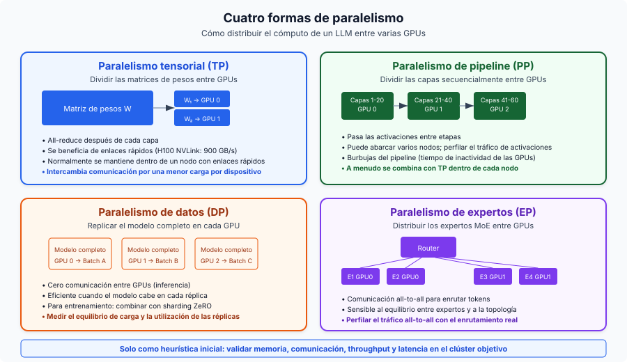
Tensor Parallelism (TP) divide matrices de pesos individuales entre GPUs y necesita un all-reduce tras cada capa. Requiere ancho de banda de NVLink (900 GB/s en H100) y funciona mejor dentro de un único nodo. TP=2 o TP=4 es lo habitual; subir más encuentra rendimientos decrecientes por la sobrecarga de comunicación. Para inferencia, TP reduce la latencia por petición al repartir el cómputo.
Pipeline Parallelism (PP) divide las capas secuencialmente entre GPUs, pasando activaciones entre etapas. Los requisitos menores de ancho de banda hacen que sea viable entre nodos vía InfiniBand, pero introduce pipeline bubbles (tiempo ocioso de GPU). Un patrón común: Llama-405B usa TP=8 dentro de nodos y PP=2 entre nodos.
Data Parallelism (DP) replica el modelo completo en cada GPU. Para inferencia, esta es la estrategia de escalado más rentable: cada réplica gestiona peticiones independientes sin comunicación inter-GPU. Para entrenamiento, es el eje principal de escalado, combinado con ZeRO para fragmentar estados del optimizador.
Expert Parallelism (EP) distribuye expertos MoE entre GPUs usando comunicación all-to-all para el routing de tokens. DeepSeek-V3 (671B total, 37B activos, 256 expertos) suele desplegarse con EP=8 por nodo. La comunicación all-to-all representa ~47% de la latencia del forward pass incluso con NVLink, lo que la convierte en el principal cuello de botella de MoE.
El marco de decisión para paralelismo:
- El modelo cabe en 1 GPU: usa solo DP.
- El modelo cabe en 1 nodo: usa TP dentro del nodo + DP entre nodos.
- El modelo excede 1 nodo: usa TP + PP + DP.
- Mixture of Experts: añade EP a cualquiera de los casos anteriores.
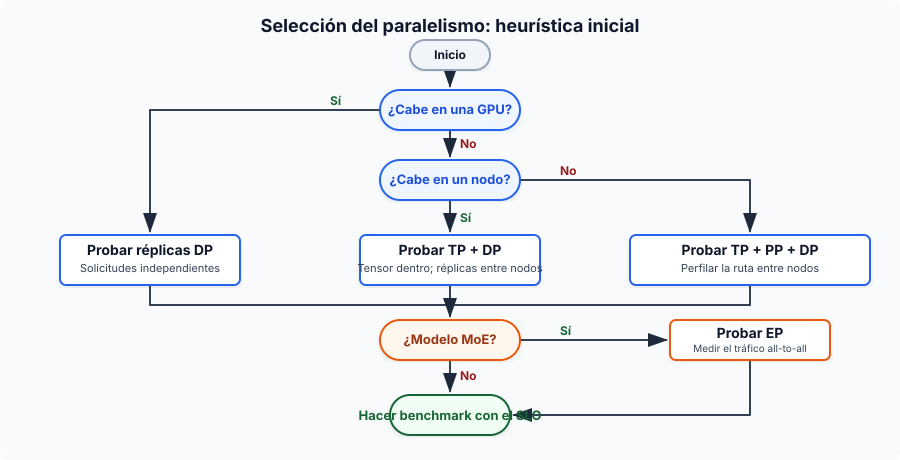
34. Comparativa de frameworks de serving
vLLM es el framework open source más adoptado, construido sobre PagedAttention y continuous batching. Tiene el soporte de modelos más amplio, una API compatible con OpenAI y soporta TP/PP/DP/EP. Es un proyecto de la PyTorch Foundation con la comunidad más grande.
SGLang iguala o supera a vLLM en muchos escenarios (hasta 3.1x de throughput en Llama-70B) gracias a RadixAttention para reutilización de prefijos, un scheduler de CPU sin sobrecarga y generación estructurada nativa. Fue el primer framework open source en igualar el throughput de inferencia oficial de DeepSeek a escala sobre 96 H100.
TensorRT-LLM tiene la mejor latencia por petición individual (35–50 ms TTFT) gracias a CUDA graph fusion y optimización de kernels, con soporte nativo para FP8/FP4. El tradeoff es una curva de aprendizaje más pronunciada, dependencia de Docker y lock-in con NVIDIA.
TGI (HuggingFace) se integra bien con el ecosistema HuggingFace y soporta múltiples backends (NVIDIA, AMD, Intel). A principios de 2025, HuggingFace ha puesto TGI en modo mantenimiento.
Ollama es para desarrolladores que quieren acceso local a LLM en dos comandos. No está optimizado para throughput de producción.
llama.cpp es la opción portátil en C/C++ con el soporte hardware más amplio (ARM, AVX, Metal, CUDA, ROCm, Vulkan). El formato GGUF soporta cuantización de 1.5 bits a 8 bits. La inferencia en CPU ofrece 3–45 tokens/s; en GPU (RTX 4090) llega a ~128 tokens/s en Llama 8B Q4_K_M.
35. Selección de GPU para inferencia
Precios y disponibilidad de GPU a marzo de 2026:
| GPU | Memoria | Ancho de banda | Precisión nativa | TF32 TFLOPS | NVLink | Cloud $/h |
|---|---|---|---|---|---|---|
| B200 | 192 GB HBM3e | 8 TB/s | FP4, FP8, INT8 | ~4,500 (FP8) | 5.0 (1.8 TB/s) | ~$6.25 |
| H200 | 141 GB HBM3e | 4.8 TB/s | FP8, INT8 | 989 | 4.0 (900 GB/s) | $2.15-6.00 |
| H100 SXM | 80 GB HBM3 | 3.35 TB/s | FP8, INT8 | 989 | 4.0 (900 GB/s) | $1.49-3.90 |
| A100 SXM | 80 GB HBM2e | 2.0 TB/s | INT8, FP16 | 312 | 3.0 (600 GB/s) | $1.10-2.54 |
| L40S | 48 GB GDDR6 | 864 GB/s | FP8, INT8 | 362 (FP16) | Ninguno | $0.80-1.50 |
| A10G | 24 GB GDDR6 | 600 GB/s | INT8, FP16 | 70 | Ninguno | $1.00-1.50 |
| RTX 4090 | 24 GB GDDR6X | 1.0 TB/s | FP8, INT8 | 83 (FP32) | Ninguno | ~$0.35/h |
H200 es ahora mismo el punto dulce para modelos grandes. Sus 141 GB de memoria permiten alojar Llama 70B en una sola GPU (antes hacían falta 2x H100), y sus 4.8 TB/s de ancho de banda ofrecen hasta 2x más rapidez que H100 en inferencia de Llama 2 70B. B200 supone un salto generacional: soporte nativo de FP4, 192 GB de HBM3e y NVLink 5.0 a 1.8 TB/s. La A10G se usa muchísimo en entornos cloud (como AWS G5) para servir modelos de 7B–8B parámetros por su relación coste-rendimiento. La RTX 4090 sigue siendo la reina de consumo, con un MSRP de ~$1.600.
El soporte nativo de cuantización en hardware influye mucho en el rendimiento. AWQ y GPTQ (con pesos INT4) pueden ejecutarse eficientemente en cualquier arquitectura desquantizando a registros FP16, pero la verdadera aceleración nativa mediante Tensor Cores depende de la generación. Hopper (H100/H200) y Ada (L40S/4090) aceleran FP8 de forma nativa, y Blackwell (B200) añade Tensor Cores FP4 nativos para grandes ganancias de throughput. Todas las GPUs listadas soportan operaciones matriciales INT8.
Decode de LLM está limitado por ancho de banda de memoria, así que el ancho de banda importa más que los TFLOPS brutos en la mayoría de cargas de serving. Por eso H200 supera a H100 aunque la arquitectura de cómputo sea idéntica.
36. Model cascading y routing
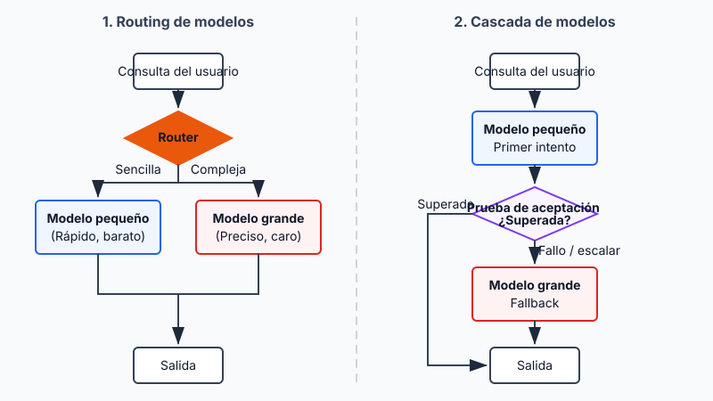
El model routing elige qué LLM gestiona cada consulta según la complejidad prevista. RouteLLM (LMSYS/UC Berkeley, ICLR 2025) usa routers de matrix factorization entrenados sobre datos de preferencias de Chatbot Arena para conseguir una reducción de coste del 85% en MT-Bench manteniendo el 95% de la calidad de GPT-4. La economía sigue cuadrando: un modelo frontier como GPT-4o cuesta ~\\(5.00/M tokens (mezclado) frente a un modelo open rápido como [Llama 3 8B](https://deepinfra.com/pricing/) a ~\\\)0.05/M, una brecha de ~100x que hace que incluso un routing imperfecto merezca la pena.
Las arquitecturas de router van desde clasificadores BERT ligeros (~1–5 ms de overhead) hasta jueces basados en LLM. Cascading es la variante secuencial: una consulta pasa por una cadena de modelos, empezando por el más rápido y barato. Si una función de scoring decide que la generación no es suficientemente buena, escala al siguiente modelo, más caro. FrugalGPT mostró que este tipo de fallback secuencial puede reducir los costes de inferencia hasta en 98% igualando el rendimiento del mejor LLM individual, o aumentar la precisión hasta en un 4% al mismo coste. La idea es que los frontier models caros solo se usen para la cola difícil de consultas que de verdad lo necesitan.
Parte VII — Aplicaciones
Patrones a nivel de aplicación que convierten las capacidades en bruto del modelo en sistemas útiles. Los embeddings impulsan la recuperación, RAG fundamenta respuestas en conocimiento externo, los agentes orquestan workflows de varios pasos y el prompt engineering une todo eso.
37. Embedding models vs modelos generativos
Los embedding models codifican texto en vectores de dimensión fija que capturan significado semántico. A diferencia de los modelos generativos decoder, que producen secuencias de tokens, devuelven un único vector denso (768–4.096 dimensiones) para toda la entrada. La mayoría de embedding models usan transformers encoder-only (atención bidireccional) en lugar de decoders. El encoder procesa todos los tokens de entrada de una vez y produce una representación contextualizada por token. Después, una capa de pooling colapsa esas representaciones por token en un único vector, normalmente mean pooling (promedio de todos los embeddings de token) o CLS pooling (usar la salida de un token especial de clasificación). Después el modelo se afina con contrastive learning: los textos semánticamente similares se acercan en el espacio vectorial y los disímiles se alejan.
Principales embedding models (2025-2026):
| Modelo | Dimensiones | Arquitectura | Puntuación MTEB |
|---|---|---|---|
| Qwen3-Embedding-8B | hasta 4,096 | Basada en decoder (Qwen3) | 70.6% |
| Gemini Embedding 2 | 3,072 | Multimodal (texto/imagen/vídeo/audio) | 68.2% |
| pplx-embed-v1-4B | 2,560 | Basada en decoder (Qwen3), INT8/binario nativo | 69.7% |
| Voyage-3-large | 2,048 | Propietaria | 66.8% |
| OpenAI text-embedding-3-large | 3,072 | Propietaria | 64.6% |
Algunas tendencias de la generación 2025–2026. Los modelos punteros ahora usan backbones decoder-only (Qwen3, Mistral) con atención bidireccional y capas de pooling por encima, rompiendo la antigua suposición de encoder-only. El modelo pplx-embed de Perplexity introdujo embeddings cuantizados nativos: INT8 (4x menos almacenamiento) y binario (32x menos) generados directamente durante la inferencia, sin pérdida de cuantización post-hoc. Gemini Embedding 2 de Google es el primer modelo de embeddings nativamente multimodal, que mapea texto, imágenes, vídeo y audio a un único espacio vectorial unificado.
Matryoshka Representation Learning (MRL, Kusupati et al., NeurIPS 2022) es la técnica que flexibiliza las dimensiones del embedding. Su nombre viene de las muñecas rusas, y MRL estructura un embedding para que sus primeras \(m\) dimensiones sean tan informativas como un modelo de \(m\) dimensiones entrenado independientemente. Durante el entrenamiento, en vez de calcular una única pérdida sobre el embedding completo, MRL calcula varias pérdidas en paralelo sobre dimensiones espaciadas logarítmicamente (64, 128, 256, 512, 1024, 2048, 3072). Todas las pérdidas se agregan y se retropropagan juntas, forzando al modelo a concentrar la información semántica más importante en las dimensiones iniciales, mientras que cada grupo posterior añade más detalle fino. De grueso a fino, como muñecas anidadas.
Tras el entrenamiento, puedes truncar el embedding a cualquiera de esas dimensiones entrenadas tomando un prefijo del vector. El impacto práctico es grande: text-embedding-3-large de OpenAI truncado a solo 256 dimensiones supera al antiguo text-embedding-ada-002 en sus 1.536 dimensiones completas en MTEB. Una reducción 6x del tamaño del vector con mejor calidad, lo que implica 6x menos almacenamiento, 6x más velocidad en búsquedas de similitud y 6x menos coste en bases de datos vectoriales sin reentrenar el modelo.
El embedding model es la elección de componente más importante en un pipeline RAG. Determina la calidad de recuperación, que a su vez fija el techo de calidad de la generación. Un embedding model pobre no puede compensarse con un LLM mejor.
38. Arquitectura RAG en producción
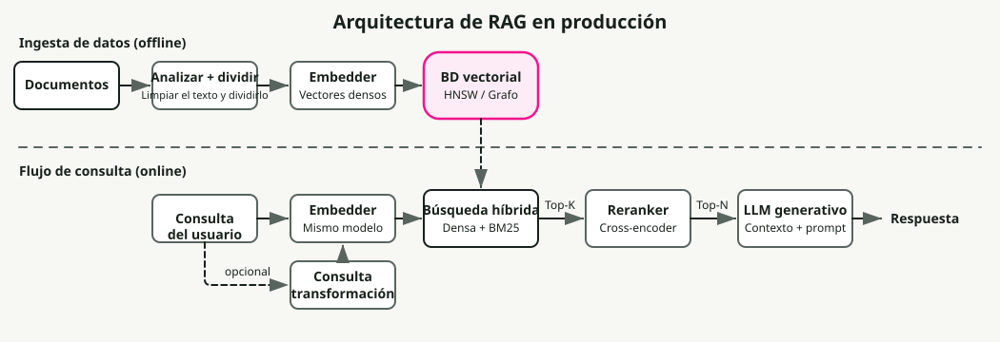
Retrieval-Augmented Generation fundamenta las respuestas del LLM en conocimiento externo recuperando documentos relevantes en tiempo de consulta e inyectándolos en el contexto del prompt. Aborda la limitación central de los modelos puramente paramétricos: su conocimiento queda congelado en el momento del entrenamiento, y alucinan cuando se les pregunta por información que no está en sus pesos. Un sistema RAG en producción es un pipeline de varias etapas, y cada etapa mueve la aguja de la calidad final de la respuesta.
El pipeline de ingestión se ejecuta offline. Los documentos en bruto (PDF, HTML, Markdown, bases de datos) se parsean primero a texto limpio, lo cual es más difícil de lo que parece: solo el parsing de PDF ya puede perder tablas, cabeceras y formato. Después el texto se divide en chunks, que se embeben e indexan de forma independiente.
La estrategia de chunking tiene un efecto desproporcionado en la calidad de recuperación. Demasiado pequeño (menos de ~100 tokens) y los chunks pierden contexto; demasiado grande (más de ~512 tokens) y diluyen la relevancia con contenido fuera de tema. Los enfoques comunes son tamaño fijo con solape (256 tokens con 10–15% de overlap — simple y eficaz), recursive character splitting (divide por párrafo, luego frase, luego palabra — respeta límites naturales) y semantic chunking (agrupa frases por similitud de embeddings — mayor calidad pero más lento).
Cada chunk se convierte después en embedding con un modelo como los de la Sección 37 y se almacena en una base de datos vectorial (Pinecone, Weaviate, Qdrant, pgvector, etc.).
El pipeline de retrieval se ejecuta en tiempo de consulta. El RAG ingenuo (embeber la query, lanzar una sola búsqueda vectorial, meter resultados en el prompt) normalmente no da la precisión que quieres en entornos enterprise. El RAG de producción añade más etapas para cerrar esa brecha:
- Hybrid search combina recuperación densa por vectores (similaridad semántica) con recuperación dispersa como BM25 (matching exacto de keywords), fusionadas mediante Reciprocal Rank Fusion (RRF). La búsqueda densa va bien con paráfrasis semánticas ("cost of living" coincide con "expenses"), y la dispersa captura términos exactos que los embeddings pasan por alto (IDs de producto, códigos de error, acrónimos). Hybrid search aporta una mejora del 15–30% en precisión frente a búsqueda vectorial pura (Redis/Azure Benchmarks, 2024).
- Reranking pasa los top-\(k\) chunks recuperados (típicamente 20–50) por un modelo cross-encoder que puntúa la relevancia query-document con más precisión que la similaridad de coseno del bi-encoder inicial. El cross-encoder ve la query completa y el documento juntos, lo que habilita un matching semántico más fino. El reranking añade otra mejora del 23.4% sobre hybrid search por sí sola (Redis/Azure Benchmarks, 2024), a costa de 50–200 ms adicionales de latencia. Los top-\(n\) resultados reranqueados (3–10) se inyectan entonces en el prompt del LLM. Cubrí el pipeline completo de búsqueda multi-etapa (BM25, reranking con cross-encoder, relevancia impulsada por LLM) en Building a Modern Search Ranking Stack.
- Query transformation reescribe la consulta del usuario antes del retrieval para mejorar recall. HyDE (Hypothetical Document Embeddings) hace que el LLM genere una respuesta hipotética, que después se embebe y se usa para recuperación. Multi-query expansion genera varias reformulaciones de la misma pregunta. Step-back prompting formula primero una pregunta más general para traer contexto más amplio.
Los modos de fallo más habituales:
- Retrieval failure — el documento correcto existe pero no se recupera. Se arregla con mejor chunking, hybrid search o filtrado por metadatos.
- Context poisoning — chunks irrelevantes recuperados desvían al LLM. Se corrige con reranking y cortes top-\(k\) más estrictos.
- Lost-in-the-middle — el LLM ignora contexto relevante situado en mitad de un prompt largo (Liu et al., 2024 mostró que los modelos atienden más al principio y al final de la ventana de contexto).
GraphRAG (Microsoft, 2024) amplía la búsqueda vectorial con recorrido de knowledge graph. Durante el indexado, un LLM extrae entidades y relaciones de documentos y construye un grafo que captura conexiones multi-hop invisibles para la búsqueda vectorial plana. En tiempo de consulta, GraphRAG recorre este grafo para consultas intensivas en relaciones como "qué proveedores están conectados con ambas empresas?", donde el RAG estándar falla. El coste es un cómputo e almacenamiento de indexado mucho mayores.
Desglose típico de latencia end-to-end: embedding 5–20 ms, vector search 10–100 ms, reranking 50–200 ms, generación LLM 200–2.000 ms (Milvus RAG Optimization Guide, AIMultiple Reranker Benchmarks, 2026). Las etapas de retrieval añaden solo ~100–300 ms de overhead, modesto comparado con la generación, pero su impacto en la calidad de respuesta es grande: es la diferencia entre una respuesta alucinada y una fundamentada.
39. Arquitecturas de agentes y tool calling
Los agentes LLM usan modelos como motores de razonamiento que planifican, invocan herramientas, observan resultados e iteran. La elección de arquitectura (cómo razona el agente y cuándo actúa) determina coste, latencia y fiabilidad. Tres patrones de razonamiento cubren la mayoría de sistemas en producción:
- ReAct — bucles Thought → Action → Observation. Se adapta en tiempo real porque cada observación actualiza el razonamiento, pero el historial se acumula y hay que reprocesarlo en cada paso, lo que lo convierte en el patrón más caro.
- ReWOO — planifica todas las llamadas a herramientas por adelantado en un único paso LLM usando placeholders (
#E1,#E2), las ejecuta (potencialmente en paralelo) y sintetiza. Hasta 5x ahorro de tokens frente a ReAct, pero trabaja "a ciegas" durante la ejecución: no puede recuperarse si falla una herramienta temprana. - Plan-and-Execute — un planner genera un plan de varios pasos; un executor ejecuta cada paso con capacidad de replanificar si falla. Permite especialización de modelos (modelo fuerte planifica, modelo barato ejecuta). Mejores tasas de éxito en tareas complejas.
| Patrón | Coste en tokens | Adaptabilidad | Mejor para |
|---|---|---|---|
| ReAct | Alto | Excelente — pivota en tiempo real | Tareas exploratorias, depuración, chat |
| ReWOO | Bajo (~5x ahorro) | Baja — ciego durante ejecución | Pipelines predecibles, dashboards |
| Plan-and-Execute | Medio | Buena — replanifica ante fallos | Análisis complejo, tareas de investigación |
Function calling es el mecanismo que usan los agentes para invocar herramientas. El function calling nativo (soportado por GPT-4o, Claude, Gemini, Llama 3.1+) produce invocaciones estructuradas de herramientas en JSON validadas contra un esquema proporcionado, con tasas de error mucho más bajas que el parsing basado en texto. El modelo ve las definiciones de herramientas como parte de su contexto y aprende a emitir llamadas bien formadas. Parallel function calling (varias herramientas en una única respuesta) reduce round trips para operaciones independientes.
Structured output y constrained decoding garantizan conformidad con el esquema modificando la propia generación de tokens. Motores como xgrammar (usado en vLLM y SGLang) aplican grammar masks en cada paso de decoding y producen JSON 100% válido con una sobrecarga casi nula. Schema-Guided Reasoning (SGR) lleva esto más lejos: como los LLM generan campos secuencialmente, colocar campos de análisis antes que los de decisión en el esquema obliga al modelo a razonar antes de decidir. Tres patrones SGR cubren la mayoría de casos de uso en producción: Cascade (pasos secuenciales), Routing (tipos Union como interruptores semánticos) y Cycle (listas acotadas).
Problemas típicos en producción: la selección de herramientas se degrada al pasar de ~15–20 herramientas disponibles, los agentes multi-step tardan 5–30+ segundos y los workflows complejos cuestan 10–50x más tokens que las soluciones de un solo prompt. La tendencia en 2024–2025 es hacia enfoques híbridos: razonamiento ReAct con function calling nativo, orquestado por frameworks como LangGraph.
40. Prompt engineering para producción
El prompt engineering en producción tiene menos que ver con trucos ingeniosos y más con fiabilidad sistemática. Las técnicas de abajo están ordenadas por impacto. Las dos primeras por sí solas resuelven la mayoría de problemas de producción.
Los ejemplos few-shot son la forma más fiable de controlar el formato de salida. 3–5 ejemplos variados que cubran casos límite (entradas vacías, consultas ambiguas, respuestas de varias partes) mejoran drásticamente el cumplimiento de formato y reducen la necesidad de postprocesado. Lo que importa es la diversidad: los ejemplos deben abarcar la distribución de entradas reales, no solo el camino feliz. A partir de 5 ejemplos aparecen rendimientos decrecientes, y cada ejemplo consume tokens de contexto, así que prima la calidad sobre la cantidad.
El prompting de Chain-of-thought (CoT) pide al modelo que razone paso a paso antes de responder. Incluso el simple sufijo "Let's think step by step" mejora significativamente la precisión en matemáticas, lógica y razonamiento multi-step (Kojima et al., 2022). Para producción, few-shot CoT (ejemplos que incluyen los pasos de razonamiento, no solo la respuesta final) es más fiable que zero-shot. Self-consistency (Wang et al., 2023) genera múltiples trayectorias CoT (temperature 0.5–0.7) y toma el voto mayoritario, reduciendo errores aleatorios a costa de llamadas extra de inferencia.
La salida estructurada con esquemas JSON explícitos (Sección 39) elimina toda una clase de fallos de parsing. Combinada con motores de constrained decoding como xgrammar, obtienes salida 100% válida con una sobrecarga casi nula. Sin regex parsing, sin bucles de reintento.
Prompt chaining divide tareas complejas en un pipeline de pasos enfocados: clasificar intención → recuperar contexto → generar respuesta → validar salida. Cada paso es un prompt simple y comprobable con un único objetivo. Esto supera de forma consistente a los "mega-prompts" que intentan manejarlo todo en una sola llamada, porque cada fase puede usar un modelo distinto (clasificador barato, generador caro), los fallos quedan localizados y son depurables, y las salidas intermedias pueden cachearse y reutilizarse. El tradeoff es la latencia adicional de llamadas secuenciales a LLM, así que usa chaining en flujos donde la calidad sea crítica.
Temperature controla la aleatoriedad en el muestreo de tokens. Usa 0.0–0.2 para tareas deterministas (classification, extraction, code generation) donde importa la consistencia. Usa 0.7–1.0 para tareas creativas (escritura, brainstorming) donde quieres diversidad. Evita temperaturas superiores a 1.0 en producción; las salidas se vuelven incoherentes. Temperature también interactúa con top_p y top_k de formas poco obvias; en la mayoría de sistemas en producción, basta con fijar temperature y dejar top_p en 1.0.
La separación entre system message y user message importa más de lo que creen la mayoría de equipos. Los system messages fijan un comportamiento persistente ("You are a medical coding assistant. Always cite ICD-10 codes."), y los user messages llevan el contenido específico de cada petición. Los modelos atienden a los system messages de otra manera: fijan el marco de comportamiento en lugar de contribuir al contenido de la conversación. Pon restricciones duras ("NEVER include patient names in output") en el system message, porque los modelos son más consistentes evitando patrones concretos que siguiendo instrucciones positivas generales.
El gran cambio en 2024–2025 ha sido pasar de "prompt engineering" a context engineering: el foco se ha movido de redactar instrucciones ingeniosas a ensamblar dinámicamente la información correcta (documentos recuperados, resultados de herramientas, historial de conversación, ejemplos few-shot) en el formato correcto y en la posición correcta de la ventana de contexto. Los modelos atienden con más fuerza al principio y al final del contexto, así que colocar en esas posiciones las instrucciones críticas y el contenido recuperado más relevante produce mejoras medibles de calidad. Cubrí este cambio en Context Engineering for AI Agents.
Parte VIII — Operaciones en producción
Las preocupaciones operativas que deciden si tu sistema sobrevive al contacto con tráfico real: rate limiting, modos de fallo, monitorización, optimización de costes y planificación de capacidad.
41. Rate limiting para peticiones de coste variable
El rate limiting tradicional por requests per second asume un coste aproximadamente igual por petición. Los LLM rompen esa suposición. Un prompt de clasificación de 10 tokens y un análisis documental de 100K tokens golpean el mismo endpoint API pero difieren en coste en cuatro órdenes de magnitud. Limitar por RPS o deja pasar sin control las peticiones caras o ahoga innecesariamente las baratas.
Los sistemas en producción necesitan rate limiting basado en tokens en varias dimensiones. OpenAI aplica RPM (requests por minuto) y TPM (tokens por minuto) con límites por niveles: GPT-5 Tier 1 empieza en 500K TPM y escala hasta 4M TPM en Tier 4. Anthropic es más granular, con límites separados de ITPM (input tokens por minuto) y OTPM (output tokens por minuto), lo que refleja que los tokens de salida cuestan 3–5x más de generar que los de entrada de procesar. Ambos usan el algoritmo token bucket, reponiendo capacidad continuamente en vez de reiniciarla en intervalos fijos.
El patrón práctico de implementación es una jerarquía de límites multidimensional (usuario → aplicación → organización → global), con niveles de prioridad para acceso premium. A nivel de petición, la técnica clave es la reserva de presupuesto de tokens: estimar los tokens totales (entrada + max_tokens) en el momento de admisión, descontarlos del bucket y luego ajustar cuando la petición termina según el uso real. Eso evita que un pico de peticiones de generación larga agote la capacidad antes siquiera de empezar a producir salida.
Para despliegues self-hosted, el equivalente es el throughput aprovisionado: reservar capacidad dedicada de GPU para tasas garantizadas de tokens. Anthropic y Amazon Bedrock lo ofrecen como producto; en despliegues con vLLM, significa configurar admission control basándose en slots activos de decode y presión de KV cache en lugar de simples conteos de peticiones. La idea remite a la Sección 5: el throughput se mide en tokens, no en peticiones, así que el rate limiting también debe hacerlo.
42. Modos de fallo frente a los que hay que diseñar
El serving de LLM falla de maneras que los servicios web tradicionales no lo hacen. Conocer estos modos de fallo (y diseñar defensas antes de que lleguen a producción) es lo que separa sistemas fiables de demos impresionantes.
Out-of-Memory (OOM) es el fallo más común. Un modelo 70B FP16 necesita ~140 GB solo para pesos, y la KV cache de una sola secuencia con contexto 128K añade ~40 GB (Sección 6). La distancia entre "cabe en memoria" y "hace OOM bajo carga" es menor de lo que parece: un batch de 8 peticiones de contexto largo puede consumir más memoria de KV cache que los pesos del modelo. La prevención empieza con el parámetro gpu_memory_utilization de vLLM (por defecto 0.9; los despliegues conservadores usan 0.85–0.90), combinado con cuantización y PagedAttention. Para cargas con alta presión de KV cache, LMCache hace offloading de KV cache a memoria de CPU o disco y consigue una reducción de latencia de 3–10x ampliando la capacidad efectiva de caché más allá de los límites de memoria GPU.
Preemption ocurre cuando se agota el espacio de KV cache y el scheduler tiene que expulsar peticiones activas para hacer sitio a nuevas. En vLLM, las peticiones preemptadas se recomputan desde cero en vez de intercambiarse a CPU (recomputar es más rápido para la mayoría de longitudes de secuencia prácticas). Desde el punto de vista del usuario, esto significa que su petición en curso se reinicia silenciosamente: TTFT parece normal, pero la latencia end-to-end se duplica o triplica. Vigila de cerca los conteos de preemption. Si aumentan, necesitas más memoria, secuencias más cortas o más réplicas.
Los picos de tail latency aparecen cuando los prefills grandes monopolizan la GPU. Un único prefill de 100K tokens puede bloquear los pasos de decode de todas las demás peticiones del batch. Chunked prefill (Sección 7) es la defensa principal, con una reducción del 54% en P99 TBT. La estrategia de scheduling también importa: el scheduler Learning-to-Rank (NeurIPS 2024) predice longitudes relativas de salida y aproxima un orden shortest-job-first, obteniendo una reducción de latencia media de 6.9x frente a FCFS con menos de 2% de overhead. Sistemas de scheduling conscientes de la longitud como CascadeInfer empujan aún más, particionando instancias en grupos especializados por longitud y reduciendo la cola de TTFT en 56–62%.
Los fallos en cascada siguen un patrón predecible. Una petición lenta (prefill grande o generación larga) ocupa un slot de decode, crece la profundidad de cola, los clientes aguas arriba llegan a timeout, los reintentos amplifican la carga 2–3x y todo el sistema se degrada. La jerarquía de prevención: admission control (rechazar peticiones cuando la profundidad de cola supera un umbral) → límites de concurrencia por petición y topes max_tokens → circuit breakers en el gateway → pools desagregados de prefill/decode (Sección 7) para que las peticiones intensivas en prefill no ahoguen a los decoders.
43. Monitorización de sistemas LLM
La monitorización de LLM es diferente de la monitorización de APIs tradicionales en varios aspectos básicos. Cada petición tiene un coste variable, dos fases distintas con cuellos de botella diferentes y una huella de memoria que depende tanto de la longitud de entrada como de la longitud generada. Métricas estándar como latencia de petición y tasa de errores no capturan la mayor parte de lo importante.
La métrica que la mayoría de equipos no está siguiendo es goodput: el número de peticiones por segundo que cumplen todos los umbrales SLO (TTFT, TPOT, latencia total). El concepto viene de la medición de productividad ML de Google Cloud y se ha convertido en la mejor medida única de la salud del sistema. El throughput bruto puede parecer excelente mientras el goodput colapsa: un sistema que procesa 100 peticiones/segundo pero viola el SLO de TTFT en el 40% de ellas tiene un goodput de 60, y el 40% de tus usuarios lo está pasando mal. Optimizar para goodput te obliga a preocuparte por la distribución del rendimiento, no solo por la media.
vLLM expone un endpoint Prometheus en /metrics con métricas que cubren el ciclo de vida del serving: vllm:num_requests_running y vllm:num_requests_waiting (presión de cola), vllm:kv_cache_usage_perc (fracción de bloques de KV cache en uso — por encima del 90% predice preemption inminente), histogramas de longitud de generación y tasas de acierto de prefix cache. La configuración práctica es simple: Prometheus hace scraping de /metrics (cada 1–5 segundos), Grafana visualiza dashboards y OpenTelemetry con Jaeger se encarga del trazado distribuido en pipelines LLM de varios servicios.
Las alertas que importan, y por qué importa cada umbral:
- Picos en el contador de preemption — se están expulsando y reiniciando peticiones; el usuario sufre duplicación silenciosa de latencia.
- Utilización de KV cache >90% — estás a un batch de peticiones de contexto largo de una cascada de preemptions.
- Profundidad de cola superior a 2–3x tu batch size — admission control debería empezar a rechazar o depriorizar.
- TTFT sube mientras TPOT se mantiene plano — este patrón divergente indica que el problema está en colas o red, no en cómputo GPU. Las fases de prefill y decode tienen cuellos de botella independientes (Sección 4), así que cuando solo se mueve una métrica sabes inmediatamente qué subsistema mirar. Este único diagnóstico ahorra horas de depuración.
44. Optimización de costes: una estrategia compuesta
Los precios actuales de API (a marzo de 2026) cubren tres órdenes de magnitud: GPT-4o a \(2.50/\)10.00 por millón de tokens de entrada/salida frente a Gemini Flash-Lite a \(0.075/\)0.30. La trayectoria es llamativa. Un rendimiento equivalente a GPT-4 cuesta hoy $0.40/M tokens frente a $20 a finales de 2022, con costes descendiendo aproximadamente 10x al año. Incluso con esta curva deflacionaria, la diferencia entre un despliegue ingenuo y uno optimizado es de 10–20x en cualquier punto de precio.
Fíjate en la asimetría del pricing de todos los proveedores: los tokens de salida cuestan 3–10x más que los de entrada. GPT-4o cobra $10/M por salida frente a $2.50/M por entrada (4x). Claude Sonnet 4 cobra $15/M por salida frente a $3/M por entrada (5x). Esto se debe a que los tokens de salida requieren pasos secuenciales de decode (Sección 7), mientras que los tokens de entrada se procesan en paralelo. Por eso optimizar la longitud de salida (salidas estructuradas, generación restringida, system prompts concisos) tiene más palanca que optimizar la longitud de entrada.
La estrategia ganadora apila varios enfoques, y sus efectos se componen multiplicativamente:
- Quantization (FP16 → INT4) reduce la memoria de serving en un 75%, lo que permite batches mayores y una reducción del 60–70% del coste operativo (Sección 9).
- Model routing envía el 70% del tráfico a modelos más baratos. Un caso real: factura mensual de $42K a $29K (Maxim AI Case Study, 2024) al ajustar la complejidad de la petición a la capacidad del modelo (Sección 36).
- Prompt caching ahorra hasta un 90% en cargas con prefijos compartidos. Anthropic cobra 0.1x del precio base por lecturas de caché, y los tokens cacheados ni siquiera cuentan contra los límites ITPM (Sección 16).
- Batch APIs ofrecen descuentos del 50% para trabajo no en tiempo real (evaluaciones, generación de datos sintéticos, clasificación masiva).
- Self-hosting alcanza el punto de equilibrio en aproximadamente >2M tokens/día, pero el análisis de breakeven es traicionero. Un presupuesto GPU de $5K/mes se convierte fácilmente en $25K cuando añades tiempo de ingeniería, overhead de infraestructura, guardias y una utilización subóptima frente a proveedores que amortizan entre miles de clientes.
Apílalos de forma conservadora: quantization (0.3x) × routing (0.7x) × caching (0.5x) × batching (0.5x) = ~0.05x, una reducción del 95% respecto a la línea base ingenua. No todas las cargas permiten todas las optimizaciones, pero incluso un apilado parcial produce ahorros de 5–10x.
El coste oculto que desmonta las cuentas del self-hosting: la ingeniería de ML representa 70–80% del coste total de despliegue, no el cómputo (TrueFoundry / MLOps Reports, 2024). La factura GPU es solo la parte visible del iceberg.
45. Planificación de capacidad y autoscaling
La planificación de capacidad para serving de LLM es distinta de la de servicios web tradicionales en tres aspectos. Los costes por petición varían en varios órdenes de magnitud (una petición de 100 tokens y una de 100K golpean el mismo endpoint). Decode es un proceso secuencial de larga duración, no un ciclo rápido request-response. Y la restricción vinculante es la memoria, no el cómputo. Si fallas en cualquiera de estas tres cosas, o pagas por GPUs ociosas o pierdes peticiones bajo carga.
El techo duro de peticiones concurrentes lo fija el presupuesto de memoria de KV cache, no los FLOPS:
Para un modelo Llama 3 70B en INT4 (~35 GB) sobre una H100 de 80 GB, quedan aproximadamente 40 GB para KV cache. Con GQA y contexto medio de 4K, cada secuencia necesita ~160 MB de KV cache, lo que da ~250 secuencias concurrentes. A contexto 128K, eso cae a ~5 secuencias por GPU. Por eso la selección de GPU y la optimización de KV cache impulsan directamente tu plan de capacidad.
La fórmula de capacidad para dimensionar la flota:
El detalle importante es "at target SLO". Una sola H100 puede empujar 2.000+ tokens/segundo si no te importa la latencia, pero solo 400–800 tokens/segundo manteniendo P99 TTFT por debajo de 500 ms. Haz siempre benchmark con tus objetivos SLO reales, no con máximos teóricos.
Las señales de autoscaling necesitan replantearse. La utilización de GPU es casi inútil como señal de escalado porque permanece alta incluso cuando el sistema está sobrecargado: la GPU siempre está ocupada, ya sea procesando peticiones de forma saludable o entrando en thrashing por preemptions. Mejores señales son queue depth (mide directamente demanda por encima de capacidad), utilización de KV cache (predice la preemption antes de que ocurra — escala al 80%, no al 95%) y degradación de goodput (las violaciones de SLO son la verdad de base de que falta capacidad). Esas son las métricas de la Sección 43.
Para entornos de desarrollo y staging, scale-to-zero es la economía correcta. Las instancias GPU cuestan $2–4/hora; un entorno de staging funcionando 24/7 cuesta $1.500–3.000/mes para una sola GPU. Las plataformas de inferencia serverless y los autoscalers basados en Kubernetes (como KEDA con métricas personalizadas) pueden apagar instancias hasta cero durante periodos de inactividad y hacer cold-start en 30–60 segundos, lo cual es aceptable en usos no productivos. El tradeoff es el tiempo de carga del modelo (30–60 segundos para un modelo 70B), lo que hace impracticable el scale-to-zero para objetivos de latencia de producción, pero recorta el gasto GPU no productivo en un 80–90%.
El sistema interconectado
Estos 45 conceptos no son una colección suelta. Forman un sistema conectado. El tamaño de la KV cache determina batch size, batch size determina intensidad aritmética, la intensidad aritmética controla si decode es memory-bound, eso impulsa TPOT y TPOT define throughput. GQA reduce la KV cache, lo que permite batches mayores, lo que eleva la intensidad aritmética y mejora la utilización de GPU. FlashAttention explota la brecha de ancho de banda SRAM-HBM. Continuous batching resuelve la utilización de cómputo pero crea fragmentación de memoria, que es justo lo que PagedAttention resuelve. Chunked prefill coplanifica trabajo compute-bound y memory-bound; el modelo roofline explica por qué esta complementariedad funciona.
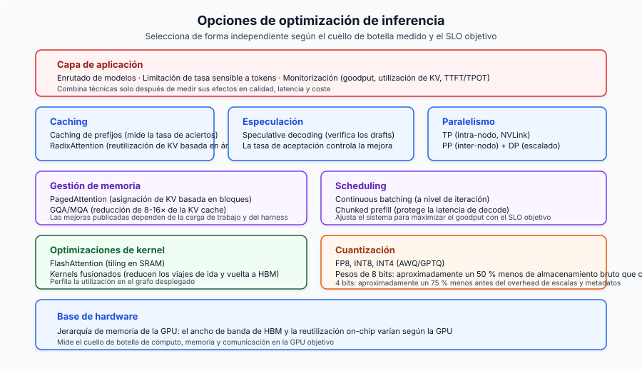
En el lado del entrenamiento, la trampa de Chinchilla empujó al campo de "entrenar grande" a "entrenar pequeño y durante más tiempo" (Llama 3 8B a 1.875 tokens por parámetro). GRPO eliminó la carga en memoria de cuatro modelos de PPO, que es lo que hizo viable el razonamiento de DeepSeek-R1. La distillation a partir del chain-of-thought de R1 resultó ser más eficaz que aplicar RL directamente a modelos pequeños, y eso cambió cómo se construyen los sistemas compactos de razonamiento.
El patrón meta: los costes de inferencia están cayendo aproximadamente 10x al año mientras las capacidades suben. Los equipos que tratan la optimización de inferencia como una disciplina real de ingeniería (routing, caching, quantization, hardware bien dimensionado) acumulan ventajas en un mercado donde el suelo de costes sigue bajando.
Principios clave
- La inferencia de LLM tiene dos fases distintas. Prefill es compute-bound, decode es memory-bandwidth-bound. Toda optimización apunta a una o ambas.
- La KV cache es el cuello de botella central. Su tamaño determina capacidad de batch, presión de memoria y, en última instancia, throughput. GQA, PagedAttention y quantization la atacan directamente.
- La jerarquía de memoria de GPU lo impulsa todo. La brecha de ancho de banda 10x entre SRAM y HBM explica FlashAttention, kernel fusion y por qué decode es memory-bound.
- Continuous batching + PagedAttention juntos ofrecen 23x de throughput frente a serving ingenuo. No negociable en producción.
- Óptimo según Chinchilla no es óptimo para inferencia. El campo ha pasado al sobreentrenamiento masivo de modelos pequeños (1.875 tokens/parámetro para Llama 3 8B).
- GRPO y distillation remodelaron la alineación. DeepSeek-R1 mostró que GRPO + recompensas verificables + distillation supera aplicar RL directamente a modelos pequeños.
- La optimización de costes se compone. Apilar quantization, routing, caching y batch APIs te da una reducción de coste de 5–10x frente a un despliegue ingenuo.
- El ancho de banda importa más que los TFLOPS para serving. H200 supera a H100 con cómputo idéntico, solo por ancho de banda de memoria.
Lecturas adicionales
Otros análisis en profundidad de este blog, organizados por tema:
- LLM Fine-Tuning Guide — cuándo hacer fine-tuning vs. RAG vs. prompt engineering
- Open-Source LLM Variants and File Formats — cómo ajustar variantes de modelo y formatos cuantizados al hardware
- LoRAX Serving Guide — serving de miles de adapters LoRA en producción
- Scaling Large Language Models — estrategias multi-GPU y multinodo
- Local LLMs on macOS — configuración práctica con llama.cpp y Ollama
- AI Agent Reasoning Loops in 2026 — análisis en profundidad de ReAct, ReWOO y Plan-and-Execute
- AI Agent Memory Architecture in 2026 — checkpoints, vector stores y memoria documental para agentes con estado
Referencias
Organizadas por área temática; números de sección entre corchetes cuando aplica.
Inferencia y atención
- FlashAttention: Fast and Memory-Efficient Exact Attention with IO-Awareness - Dao et al., NeurIPS 2022
- FlashAttention-2: Faster Attention with Better Parallelism and Work Partitioning - Dao, 2023
- FlashAttention-3: Fast and Accurate Attention with Asynchrony and Low-precision - Shah et al., NeurIPS 2024
- Flash-Decoding for long-context inference - Dao et al., 2023
- Efficient Memory Management for Large Language Model Serving with PagedAttention - Kwon et al., SOSP 2023
- Orca: A Distributed Serving System for Transformer-Based Generative Models - Yu et al., OSDI 2022
- GQA: Training Generalized Multi-Query Attention - Ainslie et al., 2023
- Triton: an intermediate language and compiler for neural network computations - Tillet et al., MAPL 2019
- FlashNorm: Fast Normalization for LLMs - 2024
- Deep Kernel Fusion for Transformers - DeepFusionKernel, 2026
Speculative Decoding
- EAGLE-3: Scaling up Inference Acceleration of Large Language Models - Li et al., NeurIPS 2025
- Medusa: Simple LLM Inference Acceleration Framework with Multiple Decoding Heads - ICML 2024
Quantization
- AWQ: Activation-aware Weight Quantization for LLM Compression and Acceleration - MLSys 2024 Best Paper
- GPTQ: Accurate Post-Training Quantization for Generative Pre-trained Transformers - Frantar et al., ICLR 2023
- Marlin: Mixed-Precision (FP16xINT4) LLM Inference Kernel - Frantar et al., 2024
Entrenamiento y fine-tuning
- LoRA: Low-Rank Adaptation of Large Language Models - Hu et al., ICLR 2022
- QLoRA: Efficient Finetuning of Quantized LLMs - Dettmers et al., NeurIPS 2023
- ZeRO: Memory Optimizations Toward Training Trillion Parameter Models - Rajbhandari et al., SC20
- ZeRO-Infinity: Breaking the GPU Memory Wall for Extreme Scale Deep Learning - Rajbhandari et al., 2021
- Self-Instruct: Aligning Language Models with Self-Generated Instructions - Wang et al., ACL 2023
- WizardLM: Empowering Large Language Models to Follow Complex Instructions - Xu et al., ICLR 2024
- Phi-4 Technical Report - Microsoft, 2024
- AI models collapse when trained on recursively generated data - Shumailov et al., Nature 2024
Alineación
- Direct Preference Optimization: Your Language Model is Secretly a Reward Model - Rafailov et al., NeurIPS 2023
- DeepSeekMath: Pushing the Limits of Mathematical Reasoning in Open Language Models - Introduced GRPO
- DeepSeek-R1: Incentivizing Reasoning Capability in LLMs via Reinforcement Learning - DeepSeek, 2025
Escalado y arquitectura
- The Llama 3 Herd of Models - Meta, 2024
- LLaMA: Open and Efficient Foundation Language Models - Touvron et al. (Meta), 2023
- Llama 2: Open Foundation and Fine-Tuned Chat Models - Touvron et al. (Meta), 2023
- Qwen3 Technical Report - Qwen Team (Alibaba), 2025
- Training Compute-Optimal Large Language Models - Hoffmann et al. (Chinchilla), NeurIPS 2022
- RoFormer: Enhanced Transformer with Rotary Position Embedding - Su et al., 2021
- YaRN: Efficient Context Window Extension of Large Language Models - Peng et al., ICLR 2024
- SGLang: Efficient Execution of Structured Language Model Programs - Zheng et al., NeurIPS 2024
- Mixtral of Experts - Jiang et al. (Mistral AI), 2024
Embeddings
- Matryoshka Representation Learning - Kusupati et al., NeurIPS 2022
- pplx-embed-v1: Diffusion-Pretrained Dense and Contextual Embeddings - Perplexity AI, 2026
Arquitecturas de agentes
- ReAct: Synergizing Reasoning and Acting in Language Models - Yao et al., ICLR 2023
- ReWOO: Decoupling Reasoning from Observations for Efficient Augmented Language Models - Xu et al., 2023
- Plan-and-Solve Prompting: Improving Zero-Shot Chain-of-Thought Reasoning by Large Language Models - Wang et al., ACL 2023
Routing
- RouteLLM: Learning to Route LLMs with Preference Data - Ong et al., ICLR 2025
Benchmarks
- MLPerf Inference v5.0 Results - MLCommons, abril de 2025
Arquitecturas de serving
- SARATHI: Efficient LLM Inference by Piggybacking Decodes with Chunked Prefills - Agrawal et al., 2023 (Chunked Prefill)
- Splitwise: Efficient Generative LLM Inference Using Phase Splitting - Patel et al., ISCA 2024 (Disaggregated Serving)
- DistServe: Disaggregating Prefill and Decoding for Goodput-optimized Large Language Model Serving - Zhong et al., OSDI 2024 (Disaggregated Serving)
Frameworks de serving
- vLLM - motor de serving basado en PagedAttention
- SGLang - RadixAttention y generación estructurada
- TensorRT-LLM - inferencia optimizada por NVIDIA
- llama.cpp - inferencia portátil en C/C++
- DeepSpeed - librería distribuida de entrenamiento de Microsoft
- Ollama - runtime local para LLM
Operaciones
- Efficient LLM Scheduling by Learning to Rank - Fu et al., NeurIPS 2024 (vLLM-LTR)
- CascadeInfer: Low-Latency and Load-Balanced LLM Serving via Length-Aware Scheduling - 2024
- Goodput metric as measure of ML productivity - Google Cloud, 2024
- vLLM Optimization and Tuning - Documentación de vLLM
- vLLM Metrics - Documentación de vLLM
- LMCache: KV Cache Management for LLM Serving - offloading de KV cache
- OpenAI Rate Limits - documentación de la API de OpenAI
- Anthropic Rate Limits - documentación de la API de Anthropic